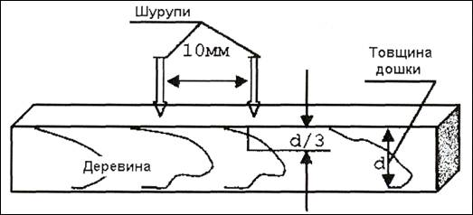
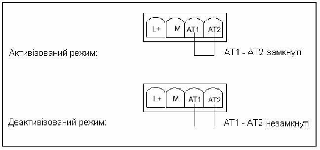
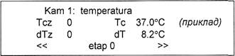
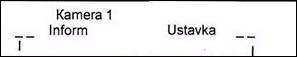
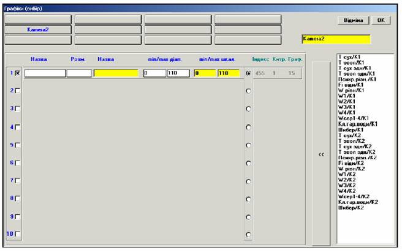

Назва реферату: Автоматизована система керування технологічними процесами сушіння деревини з використанням ПК
Розділ: Технічні науки
Завантажено з сайту: ua.textreferat.com
Розміщено: 2007-10-17 15:54:39
Автоматизована система керування технологічними процесами сушіння деревини з використанням ПК
Перелік скорочень та термінологія
В документі прийняті наступні скорочення:
|
AI AO C7-613 CPU DB DI DO FB FI HMI I/O IM MMC MPI PC PG PLC PS SM323 SM331 Step7 W АСК АЦП ИВ-3 ОС ПВЕ ПІД ПЛК Тз Тс |
- ввід аналоговий - вивід аналоговий - компактний блок керування SIMATIC - центральний процесорний модуль - блоки даних - ввід дискретний - вивід дискретний - функцій ний блок - відносна вологість сушіння - Human-Machine Interface, інтерфейс “людино-машина” - ввід/вивід - інтерфейсний модуль - мікро карта пам’яті - Multi Point Interface, стандартний багатоточковий інтерфейс - персональний комп’ютер - програматор - програмований логічний контролер - блок живлення - модуль дискретного вводу-виводу - модуль аналогового вводу - програмний пакет - вологість деревини - автоматизована система керування - аналогово-цифрове перетворення - вимірювач вологості деревини - операторська станція - правила влаштування електроустановок - пропорційно-інтегральний-диференціальний алгоритм керування - програмований логічний контролер - температура агента сушіння за зволоженим термометром - температура агента сушіння за сухим термометром |
Нижче приведено список основних термінів, які використовуються в даному матеріалі.
Операторська станція – сукупність апаратних і програмних засобів, які використовуються оператором-технологом і призначені для вибіркового представлення інформації про технологічний процес на екрані телевізійного монітора, а також для ручного керування.
Миша – маніпулятор, який являє собою переміщуваний по столі пристрій, і використовується для встановлення курсора в потрібну точку екрану.
Стандартне програмне забезпечення – базове програмне забезпечення, розроблене сторонніми фірмами для персональних комп’ютерів, яке є комерційним продуктом і носить універсальний характер. В операторській станції стандартним програмним забезпеченням, зокрема є операційна система Microsoft NT 4.0 + Service Pack або Microsoft Windows 2000.
Програмне забезпечення споживача (прикладне) працює під керуванням базового програмного забезпечення. Воно розроблене з урахуванням конкретного проекту автоматизації.
Поточна (динамічна) інформація – інформація про параметри “на даний момент”. Поточна інформація, яка вимагається для представлення на екрані монітора, періодично (приблизно 1 раз за 3-4 секунди) запитується у ПЛК. Попадаючи на екран, кожне нове значення “затирає” попереднє значення.
Архівна інформація (тренд) – інформація, яка характеризує передісторію процесу. Архівна інформація з певним періодом часу передається від ПЛК до операторської станції, записується в її локальний архів і може викликатися на екран командою оператора.
Сигналізація – інформація про помилки, пов’язані з недопустимим значенням параметрів або неполадками програмно-технічних засобів. Сигналізація виконується в вигляді мигання і/або зміни кольору окремих частин зображення.
Попереджувальна сигналізація – сигналізація про безпечні помилки, які не вимагають негайного втручання людини.
Аварійна сигналізація – сигналізація про небезпечні помилки, які вимагають негайного втручання людини.
Технологічна сигналізація – сигналізація про помилки, пов’язані з недопустимими значеннями сигналів і викликані неправильним настроюванням системи, неполадками в технологічному обладнанні або неполадками периферійних засобів керування (здавачі, виконуючі пристрої).
Прикладна сигналізація – сигналізація про помилки, пов’язані з неполадками програмно-технічного комплексу.
Нова помилка – помилка, факт появлення якої не квітований оператором.
Поточна помилка – наявна помилка, факт появлення якої квітований оператором.
Квітування – команда оператора, яка свідчить про те, що він був повідомлений про появу помилки.
Робоча область екрану – область екрану, на якій подається викликана опертором інформація у вигляді мнемосхем і різних вікон. Робоча область займає основну площу екрану.
Мнемосхема – переважно графічне зображення, яке має імя і представляє динамічну інформацію на фоні статичної “картинки”, яка показує в умовному вигляді конфігурацію та взаємозв’язок окремих частин технологічного обладнання і елементів. Мнемосхема може містити зображення графічних примітивів, порівняно складних фігур, текстів, сигнатур і т.п.
Вікно – додаткове зображення, яке за командою оператора тимчасово вводиться поверх поточної мнемосхеми. Одночасно можна відкрити декілька вікон.
Графік – вікно, яке використовується оператором в процесі діалогу для пошуку необхідної інформації або задання певних параметрів.
Список – інформація в діалоговому вікні, організована у вигляді переліку.
Ручне керування – сукупність процедур зі зміни параметрів або стану об’єкта.
Клавіші миші – дві клавіші (ліва і права), при натисканні яких на екран викликається необхідна інформація або формується команда.
Екранні клавіші – зображення на екрані, яке за формою нагадує звичайні клавіші та використовується для виклику мнемосхем, пошуку необхідної інформації, подачі різних команд і т.д.
Селекторні кнопки – зображення на екрані, які за формою нагадують звичайні кнопки і використовуються для вибору одного з декількох значень або для вказування істинності деякого значення.
Кнопки з незалежною фіксацією – екранні елементи керування, стан яких при натисканні лівої кнопки миші можна переключати і відповідно змінювати їхній вигляд відображення. При включеному стані вони позначаються символом “х”, у виключеному стані це позначення знімається. За допомогою цих кнопок користувач може вибирати/відмінити певну опцію, а у випадку групи кнопок можна вибрати/відмінити декілька опцій.
Активність – стан зображення, при якому стосовно до нього можуть виконуватись задані дії. Активними можуть бути мнемосхема, окремий об’єкт на мнемосхемі, діалогове вікно, екранна клавіша і т.д.
1. Вступ
У наш час важко уявити собі галузь народного господарства чи промисловості, в якій не можна було б використати мікроконтроллер чи електронно обчислювальну машину. Новітні вимірювальні та інформаційні технології, на основі використання мостів змінного струму та імпедансних датчиків, що в основному застосовуються для розробки і налагодження серійного виробництва сучасних електронних засобів вимірювання широкого кола фізичних параметрів, вже впроваджені в різних галузях. Ці пристрої можуть вбудовуватись в контури керування цілими технологічними процесами, окремими приладами чи системами.
З появою мікропроцесорів почався новий період у сфері автоматизації виробничих процесів. У складі технічних засобів автоматизації виробничих процесів він використовується практично на всіх рівнях обробки даних, до обчислювальних комплексів і систем. При цьому істотно розширюються можливості периферійних пристроїв.
Завдання створення автоматизованих систем керування технологічними процесами (АСКТП) з використанням ПК (персонального комп’ютера) постають практично у всіх галузях. Перед розробниками автоматизованих систем виникають, у першу чергу, питання: яким чином реалізувати вже відомі технічні системи на надійнішій елементній базі та з більшою ефективністю. При цьому вирішується питання взаємозв’язку показників надійності системи та економічної ефективності.
Деревообробна промисловість теж не являється винятком серед інших сфер використання ПК. Особливо його застосування важливе у керуванні процесами сушіння деревини, що є обов’язковим етапом технологічного процесу деревообробного виробництва. Для досягнення найкращої якості матеріалу та виробів, що з нього виготовляють, там необхідний постійний контроль та регулювання параметрів технологічного процесу.
Сушіння деревини - це процес витіснення вологи з деревини шляхом її випаровування.
Основна задача сушіння – висушити пиломатеріали в мінімальний термін до необхідної якості в залежності від подальшого їх застосування: кінцева вологість Wk становить 6-8% для меблів, 10-12% для столярних виробів, 18-22% при транспортуванні і т.д.
Технологічна мета сушіння:
ü Запобігання формозмінності і розмірозмінності
ü Збільшення міцності і довговічності
ü Покращення всіх механічних показників
ü Захист деревини від гниття і псування
ü Деревина не заражається біологічними агентами руйнування при вологості, що не перевищує 150% (так званий вологий імунітет), або нижче аніж 25% (так званий сухий імунітет).
ü Зменшення маси деревини при сушінні
ü Покращення якості механічної обробки, склеювання, і опоряджування
Розвиток лісосушильної техніки в наш час базується на конструюванні нових типів лісосушильних камер, які є результатом інтенсивної науково-дослідницької діяльності. Проектними організаціями розроблені типові робочі проекти сучасних камер, налагоджений їх випуск. Однак не всюди використовуються автоматизовані системи керування цими камерами, що в значній мірі сприяло б швидкому зросту потужності лісосушильного господарства країни.
2. Аналіз розглядуваної проблеми
2.1. Характеристика процесу та існуючого стану поставленої задачі
При використанні деревини в будь-якій галузі народного господарства майже завжди потрібно зниження її вологості до визначеної величини, залежно від призначення деревини.
Процес видалення вологи із деревини шляхом випаровування називається сушкою. Її завданням є видалення лишньої вологи з деревини в максимально короткий термін без порушення цілісності деревини.
Спеціалістам по деревообробці, що надають великого значення якості продукції, давно відомо, що найкраща обробка деревини мало що дасть без оптимального сушіння вихідного матеріалу, оскільки якість висушеної деревини значно вища, ніж сирої. Сушка деревини підвищує міцність і довговічність споруджень і виробів з деревини, захищає від загнивань, зменшує чи повністю виключає формозмінюваність, надає можливість склеювання і обробки деревини та значно зменшує її вагу (на 30-40%). Пізніше він піддається різним деформаціям. Сушіння деревини повинно проводитись в таких умовах, при яких у висушеному матеріалі будуть відсутні як зовнішні, так і внутрішні тріщини, а також внутрішні напруження.
Сушіння деревини реалізується в основному в сушильних камерах та сушильних тунелях різноманітної модифікації, хоча застосовують ще й атмосферну сушку деревини, тривалість якої є набагато більша і залежить від пори року, температури і відносної вологості повітря, місцезнаходження. Проте для камерної сушки незалежно від виду сушильної камери технологічний процес сушіння має однакову схему та залежить від типових чинників.
Основні параметри, які впливають на якість сушіння:
1. Вентиляція – обмін між повітрям камери і зовнішнім. Чим вища швидкість вентиляції, тим швидше проходить відбір вологи і, відповідно, сушіння.
2. Температура в сушильній камері. Чим вища температура, тим швидше проходить процес виділення вологи з деревини, тобто пришвидшується сушіння.
3. Відносна вологість повітря – характеризує степінь його насичення водяними парами. Чим вона нижча, тим вища здатність вологопоглинання і сушіння.
Якісне сушіння буде залежати від правильної комбінації цих параметрів. Якщо в цій комбінації потрібно змінити один з параметрів, інші два також потрібно підлаштувати з новою конфігурацією параметрів сушіння.
Якість висушеного виробу знаходиться в оберненопропорційній залежності від швидкості сушіння. Підвищення температури та пониження відносної вологості повітря в камері при постійних інших параметрах надає змогу пришвидшити процес сушіння, але погіршує якість матеріалу.
Процес сушіння деревини проходить по чітко визначеному плану з правильним дотриманням усіх параметрів та проходить шість режимів сушіння деревини.
Режим №1. Попередній нагрів. Цей режим призначений, для того щоб зняти внутрішнє напруження, яке могло виникнути при транспортуванні чи зберіганні пиломатеріалів. Також цей режим призначений для розкупорювання капілярів деревини, які були «зациментовані» при зберіганні чи транспортуванні деревини. Режим проводиться при вологості в камері близькій до 100% з заданою різницею температур між деревиною і камерою та закінчується після досягнення температури в камері температури установки.
Режим №2. Попереднє сушіння деревини. Проводиться при відносній вологості повітря в камері 60-85% в залежності від вибраної програми сушіння. В процесі сушіння по цьому режиму із деревини виділяється «вільна» волога, яка заповнює капілярні судини і міжклітинні порожнини. Це велика частина вологи, що міститься в деревині. Сушіння на цьому етапі проходить доволі швидко, тому й потребує великої уваги при проведенні. Режим проводиться до досягнення вологості в деревині 25-30%.
Режим №3. Проміжна термовологообробка. Проводиться при вологості в камері близько 100% і температурі, при якій була досягнута вологість деревини 25-30%. Мета проведення проміжної термовологообробки в усуненні внутрішніх напружень (особливо для твердих листяних порід), що виникають в результаті нерівномірного висихання матеріалу, оскільки інтенсивність випаровування вологи з поверхні значно більша інтенсивності її переміщення всередині деревини, що й викликає перепад вологості між внутрішніми і зовнішніми шарами.
Режим №4. Кінцеве сушіння деревини. Проводиться при підвищеній температурі в камері і відносній вологості в камері 25-45%, в залежності від вибраної програми сушіння. В процесі сушіння по цьому режиму із деревини виділяється зв’язана (конструктивна) волога, що знаходиться в міжклітинних порожнинах (всередині клітинної мембрани). Процес сушіння іде доволі повільно. Закінчення сушіння по цьому режиму проходить при досягненні деревиною заданої вологості.
Режим №5. Кінцева термовологообробка. Проводиться при вологості в камері близько 65% і температурі, при якій була досягнута кінцева вологість деревини. Мета проведення кінцевої термовологообробки полягає в усуненні внутрішніх напружень, що виникають внаслідок нерівномірного висихання деревини (вирівнювання вологості поверхневого і внутрішніх шарів деревини).
Режим №6. Кондиціювання. Цей режим проводиться для зменшення різниці температур в камері та на вулиці (чи в розвантажувальному приміщенні) для запобігання від теплового удару по деревині при її розвантаженні. Режим проводиться при вологості, що не перевищує 45-50%, при цьому підтримується різниця температур між деревиною і камерою та ж, що й у першому режимі. Закінчення режиму проходить при досягненні температурою камери величини рівної температурі вулиці плюс різниця температур між деревиною та камерою.
Неправильне проведення процесу сушки дає тріщини, викривлення, нерівномірність просихання матеріалу – все це знижує процент корисного виходу при наступній механічній обробці деревини і підвищує вартість виробів. Процес сушки являється найбільш довгим і одним із самих дорогих процесів у всій технологій деревообробки.
Більшість деревообробних підприємств застосовують на початковій стадії виробничого процесу камерну сушку пиломатеріалів. Серед промислових методів контролю за ходом процесу камерного сушіння деревини найбільшого застосування набув метод контролю температури і вологості сушильного агенту.
Сушильним агентом являється повітря чи топочний газ як вологоносій та теплоносій.
Поріг насиченості сушильного агенту в камері визначають за допомогою термодатчиків, так званих сухого і вологого термометрів які дають можливість визначити психрометричну різницю, а потім по таблицях – відносну вологість середовища в сушильній камері. Інформацію про температуру середовища отримують безпосередньо із сухого термометра. В зв’язку з цим системи контролю стану середовища в лісосушильних камерах базуються на застосуванні термометрів і психрометрів.
Психрометром називається пристрій, який складається з двох термометрів (рис.2.1.1), один з яких вимірює температуру навколишнього повітря, другий – температуру мокрої марлі опущеної одним кінцем у посудину, в якій підтримується постійний рівень води.
Психрометр
Рис.2.1.1
Випаровування вологи з поверхні мокрої марлі, яка обтягує кінець мокрого термометра психрометра, викликає зниження його температури до межі охолодження при випаровуванні. Різниця між показниками сухого і мокрого термометрів називається психрометричною різницею. Чим інтенсивніше іде випаровування, тим більша величина психрометричної різниці, тим сухіше повітря в камері.
Основним фактором, який сповільнює процес сушіння деревини, є внутрішні напруження деревини. Перевищення допустимих значень напружень в процесі сушіння, призводить до утворень тріщин і деформації матеріалів, що різко знижує якісні характеристики сировини в початковий період сушіння, перехід вологості ΔW по перерізі сортименту інтенсивно зростає і відповідно зростають вологові напруження δ ост напруження ростуть незначно. Точність регулювання температури і вологості в цей період повинна бути високою наскільки, щоб повні напруження не перевищували межу міцності δ др. δ повн. ≤ δ др.доп. Після досягнення вологовими напруженнями максимальних значень починається наступний етап сушіння, для якого характерне значення зменшення вологових напружень δ вл.
Функціонування багатоканальної установки для дистанційного контролю температури і вологості сушильного агента в камерах здійснюється за такою схемою (рис. 2.1.2).
Функціональна схема САР
Рис.2.1.2
В об’єкті регулювання (сушильна камера) необхідно підтримувати на даному етапі показники на постійному рівні Θ0. Якщо в даний момент вони відрізняються від заданої і становлять Θх сприймаючий елемент на виході видасть параметр, наприклад напругу Uх, пропорційну Θх. На вхід порівнюючого пристрою, крім Uх , подається еталонну напругу U0 від задаючого пристрою, причому U0=КΘ0, де К – коефіцієнт пропорційності.
Таким чином, напруга задаючого пристрою U0 відповідає потрібним показникам Θ0 в сушильній камері. Різниця напруг пропорційна відхиленню показників подається на підсилювач. В залежності від знаку сигналу різниці, виконавчий механізм діє на регулюючий орган (видає параметр ω1), який керує регулюючим параметром R1.
В діючих системах сушки деревини в якості задаючого та порівнючого пристрою працює оператор. Він періодично “опитує” з допомогою перемикачів (сприймаючий елемент) об’єкти контролю – лісосушильні камери, виконуючи наочний підрахунок показів з вимірювальних пристроїв ВПt, ВПΔt; порівнюючи ці показники із заданими на цей момент часу по режиму сушіння, він приймає рішення по видачі того чи іншого керуючого сигналу (керування підсилювачем).
Керуючі сигнали впливу здійснюються вручну шляхом зміни положення відповідних засувів та вентилів, які в свою чергу змінюють витрату пари в калорифери і на камеру, напрям повітряного потоку змінюють положенням шиберу.
Технологічні вимоги і умови експлуатації визначають методи застосування і технічних засобів контролю. Основною вимогою є точність виміру психрометричної різниці.
Допустимі динамічні відхилення від середньої психрометричної різниці складають +1.5-2.00. У відповідності із цими вимогами здійснюють вибір датчиків температури.
Межі вимірювання вологості середовища в камері приймаються рівними 20-100 %, межі вимірювань температури від 0 до 1500с. В якості давачів в системах контролю застосовують мідні ТОМ і платинові ТОП термометри опору.
Першочергове завдання автоматичного регулювання процесу сушіння –стабілізація режиму. Для цього, на даний час, встановлюють регулятори, які забезпечують підтримку температури та відносної вологості на заданому рівні. Тип регулятора і параметри налагодження вибирають з урахуванням статичних і динамічних особливостей сушильних камер і вимог поставлених до системи регулювання.
При оснащенні сушильних камер автоматичними регуляторами велике значення набирає раціональний вибір компактних систем, які дозволяють регулювати процес сушки у великій кількості камер.
САК сушки деревини в камерах з термосигналізатором. Ця система (рис.2.1.3) відноситься до числа простіших.
САК сушки деревини в камерах з термосигналізатором ТС-100
Рис. 2.1.3
Автоматичне регулювання температури в сушильній камері здійснюється паровим вентилем 8 (рис.2.1.3,а) з електромагнітом, який керується релейним блоком 1. для сигналізації використовують електричний дзвінок 6. Термосигналізатор 2, релейний блок і дзвінок змонтовані на окремому щиті ззовні сушильної камери, в вигідному для спостереження місці. Вентиль 8 встановлюють на відвідній лінії паропроводу між двома ручними вентилями 7. поки температура в камері, яка вимірюється термобалоном 10, нижче тієї, яку показує стрілка 4 (рис.2.1.3, б), рухомий контакт 3 розімкнутий і котушка реле Р знеструмлена. В зв’язку з цим його нормально замкнутий контакт замкнутий, катушка електромагніту ЕМ вентиля знаходиться під напругою, сигнальна лампа Л2 горить, і в калорифери камери поступає пара. Коли температура в камері досягне заданої, контакт 3 торкнеться стрілки 4, викликаючи спрацювання реле, а відповідно, розімкнення його нормально замкнутого контакту і відключення електромагніту вентиля і сигнальної лампи Л2. Це потягне за собою перекривання подачі пари в калорифери сушки. У випадку несправності апаратури, яка викликає подальше підвищення температури в камері, рухомий контакт 3 сигналізатора торкнеться червоної стрілки 5, яка включає дзвінок. Для перевірки правильності показів пристрою в камері встановлюють термометр 9.
Сушильні камери періодичної дії з примусовою циркуляцією досить різноманітні по своїй будові. Розглянемо найбільш характерні системи цієї групи камер.
Камери з осьовими вентиляторами на поперечних осях з потужною реверсивною поперечною горизонтальною циркуляцією зі швидкістю 2,5-3 м/сек. (рис.2.1.4) найбільш ефективні.
Камера осьовими вентиляторами на поперечних осях
1- герметична алюмінієва коробка камери;
2- каркас з кутникової сталі;
3- стіни (цегла);
4- бетонна стеля;
5- теплоізоляція стелі;
6- калорифер (ребристі труби);
7- вентилятор осьовий;
8- електродвигун двофланцевий на два вентилятора;
9- вихлопний дросель-клапан;
10-містки для обслуговуючого персоналу;
11-штабель пиломатеріалів
Рис. 2.1.4
Осьові вентилятори по довжині камери встановлюються через 2-2,5 м. один двохфланцевий електродвигун може приводити в рух два вентилятора, які знаходяться в сусідніх камерах. При наявності потужного калорифера пари тиском 4-5 атм матеріал в цих камерах може прогріватися в 5-6 раз швидше, ніж у камерах з природною циркуляцією; тривалість сушки в них також в 4-5 раз зменшується в порівнянні з нормативними термінами для камер з природною циркуляцією.
Якщо сушка даного типу встановлюється всередині виробничого приміщення, то вона виконується у вигляді металічної камери з хорошою теплоізоляцією. Металічний каркас камери оброблюється зсередини листковим алюмінієм, а ззовні листковою сталлю.
Якщо сушка представляє окреме приміщення, то воно робиться цегляним з бетонною напівциркульною тепло ізольованою стелею і бажано з внутрішньою металічною коробкою.
Ці високотемпературні камери обов’язково повинні бути обладнані дистанційним контролем режиму сушки і вологості деревини в процесі сушки, механічним закладчиком контрольних зразків деревини, спостерігаючим пристроєм за станом деревини в камері і централізованою системою змазки підшпинників валів вентиляторів. Процес сушки повинен проходити без заходу в камеру де журного сушильника.
Ежекційно-реверсивні камери (рис.2.1.5) відрізняються простотою будови і надійністю в експлуатації.
Ежекційна реверсивна сушильна камера ЦНИИМОД
1- осьовий вентилятор серії В;
2- повітронапірні канали;
3- насадки;
4- екран;
5- труби калорифера;
6- зволожуючі труби;
7- електродвигун;
8- отвір для приточного повітря;
9- витяжна труба.
Рис. 2.1.5
В камері встановлюються два осьових вентилятора серії В, які працюють почергово. Вали вентиляторів виходять в коридор управління і через еластичні муфти безпосередньо з’єднуються з валами електродвигунів. Безпосереднім рушієм циркуляції повітря в камері являються ежектори – насадки, з отворів яких викидається під тиском вентилятора повітря зі швидкістю 25-30 м/сек Це повітря тягне за собою (ежектує) повітря зі штабелів і заставляє його циркулювати по замкнутому колу впоперек камери. Кількість ежектуючого повітря, яке подається вентилятором до насадок, приблизно в 4-5 раз менше всієї кількості циркулюючого в камері повітря. Швидкість циркуляції повітря по штабелю в існуючих ежекційно-реверсивних камерах складає 1-1,2 м/сек
Для створення більш високих швидкостей циркуляції повітря в штабелі камери цього типу не можна рахувати ефективними через невиправдано великі потужності електродвигунів, які при цьому потрібно встановити.
Камери типу ВИАМ-ІІ також значно розповсюджені в промисловості. Суть будови цієї камери видно з рис.2.1.6.
Сушильна камера ЦНИИМОД-23
Рис.2.1.6
Зверху над штабелями розміщені калорифери і вентилятори. Осьові реверсивні вентилятори встановлені на загальному валі, який іде вздовж всієї камери. В 14-метровій камері встановлюються 6 вентиляторів; вал складається з декількох частин.
Камера забезпечує гарну рівномірну, реверсивну циркуляцію повітря по штабелю зі швидкістю 1-1,2 м/сек Продуктивність її не менша продуктивності ежекційно-реверсивних камер, а якість сушки навіть краща, рівномірніша.
Недоліками камер цього типу є: складність обладнання, необхідність детального монтажу вентиляційної системи і періодичної її наладки, велика кількість підшпинників, важкість і недостатність їх змазки, а внаслідок цього швидкий знос підшпинників і вихід їх із ладу.
2.2. Обґрунтування теми проекту
Недолік способу ведення сушіння пиломатеріалів по параметрам сушильного агента полягає в неоднозначній залежності між температурою і вологістю сушильного агенту та вологістю матеріалу в камері.
Якість висушених матеріалів не може бути гарантована. Тому на даний час доцільна була б розробка та впровадження у виробництво систем автоматизації з контролем стану пиломатеріалів в процесі сушіння.
Поява мікропроцесорів та ПК (персональних комп’ютерів) зумовила розробку і широке впровадження в промисловість високонадійних, гнучких щодо заміни алгоритму і порівняно дешевих автоматичних систем контролю технологічного процесу (АСКТП). Для їх впровадження необхідна наявність сучасних універсальних ПК (персональних комп’ютерів) з відповідним програмним забезпеченням, а також набір мікроконтроллерів з широким діапазоном технічних характеристик. Комп’ютер здійснює програмне керування верстатами, виробничими лініями, промисловими роботами та іншими складовими АСКТП. Він регулює параметри технологічних процесів та виконує низку інших функцій.
Суть пропозиції полягає в особливих принципах побудови вимірювально-інформаційного каналу між об'єктом контролю й оператором (або комп'ютером автоматичної системи управління). Цей канал містить у собі вимірювальні електроди або імпедансний (ємнісний, резистивний, індуктивний) датчик, за допомогою якого параметр об'єкту контролю, що вимірюється, перетворюється в пасивну або активну електричну величину, електронний мостовий вимірювальний блок, а також мікропроцесорний контролер для управління процесором виміру, математичної обробки, передачі і реєстрації отриманої інформації.
Структура вимірювально-інформаційного каналу, алгоритм його роботи, апаратне і програмне забезпечення є уніфікованими. Це дозволяє здійснювати розробку на одній технологічній базі, при мінімальних апаратних і програмних модифікаціях, широку гаму приладів різного призначення для використання з переважною більшістю існуючих датчиків. Уніфікація й універсальність апаратних і програмних засобів забезпечує високу серійноздатність і дешевизну розроблювальної за даною технологією контрольно-вимірювальних приладів і інформаційно-вимірювальних систем, завдяки використанню вимірювальних сигналів перемінного струму, формованих і оброблюваних за допомогою цифрових і аналого-цифрових методів. Перевагою запропонованих технологій також є: більш висока точність вимірів, можливість віддаленого підключення датчиків, застосування дешевих електронних компонентів.
Також позитивною рисою комп’ютерного керування є те, що комп’ютер може працювати в різних режимах, таких як:
· збирання даних – є однією із найпростіших форм використання ПК. У даному випадку параметри виробничого процесу перетворюються на цифрову форму, сприймаються системою введення і переміщуються в запам’ятовуючий пристрій. МП (мікропроцесор) здійснює логічну обробку і перетворення інформації. Результати обчислень використовуються для керування. Для цього вони можуть відображатись на екрані монітора або ж передаватись після спеціальної обробки на виконавчі механізми.
· порадник оператора – у цьому випадку виходи МП не пов’язані з органами керування, а інформація виводиться на пристрій відображення. Система за введеною в неї моделлю розраховує керуючі дії, необхідні для наближення режиму процесу до оптимального, виводить їх на спостереження. Оператор приймає рішення, враховуючи чи ігноруючи рекомендації, які видає йому система. В останньому випадку він здійснює керування на підставі власного досвіду та інтуїції. Одним із серйозних недоліків такого режиму використання МП в АСКТП є обмеження пов’язані з участю людини-оператора.
· супервізорне керування – у цьому випадку процесор працює в замкнутому контурі, тобто виходи системи пов’язані з виконавчими механізмами і всі вставки регуляторів здійснюються безпосередньо системою. Робота вхідної частини такої системи ідентична роботі системи в режимі порадника оператора. Але в останньому випадку значення вставок перетворюється на величини, які можуть змінювати настройки регуляторів. Функція оператора щодо спостереження і втручання вимагається лише в разі виникнення відмов системи або непередбачених ситуацій.
· безпосереднє цифрове керування – передбачає подачу керуючих сигналів, які використовуються для приведення в дію виконуючих механізмів, безпосередньо з керуючого ПК. Регулятори окремих параметрів взагалі вилучаються із системи. Система керування розраховує реальні дії і передає відповідні сигнали безпосередньо на виконавчі механізми. Розрахунки реальних дій і передавання відповідних сигналів на керуючі механізми здійснюються окремо для кожного контуру керування. Кількість таких контурів може змінюватись від кількох десятків до кількох сотень. Зрозуміло, що така система повинна бути в реальному режимі. Тому затримки часу в кожному контурі необхідно враховувати і аналізувати.
2.3. Огляд і аналіз відомих проектних рішень
На сучасному ринку товарів і послуг є багато різних пропозицій щодо програмних систем автоматичного керування, але собівартість їх досить висока. Так, німецька фірма „BESS BOLMANN” розробила цілу систему для технологічного процесу сушіння, яка називається „810-РС”. Компанія „BESS BOLMANN” пропонує як технологію сушіння, так і систему керування, в яку входять:
ü програмне забезпечення “810-РС” – комп’ютерна програма розроблена „BESS BOLMANN” для 810-РС мережі і її централізованої роботи, огляду створення (документів) програми, аналізу процесу сушіння, зберігання даних, настройки, програмування, узгодження дій комп’ютера, оператора і виконавчих та сприймаючих елементів;
ü з’єднувач ПК – забезпечує зв’язок між персональним комп’ютером і мережею „BESS BOLMANN”. Конвертує електричні сигнали послідовного com інтерфейсу RS-485 – формат для ПК мережі і навпаки;
ü пристрій для забезпечення живлення – забезпечує подачу живлення в систему;
ü мережевий кабель – встановлює зв’язок між окремими з’єднувальними коробками. Завдяки цьому спеціальному кабелю протяжність мережі може досягати 1300м;
ü з’єднувальні коробки – проміжні пункти сіткового кабелю. Окремі модулі вставляються в з’єднувальні коробки з допомогою з’єднувального кабелю;
ü з’єднувальний кабель - пов’язує окрему плату модуля із з’єднувальною коробкою;
ü з’єднувальна плата – ця знімна плата дає можливість модулю взаємодіяти із мережею BESS BOLLMAN. Два маленьких перемикачі, що розміщені над роз’ємом для з’єднувального кабелю, дозволяють налагодити системний номер модуля. Десятинне число настроюється верхнім перемикачем, а однозначне число нижнім перемикачем
ü модуль сушильної камери призначений для керування процесом. Незалежно запускає фазу активної програми, яка передається ПК, і подає запит на нову фазу у ПК. Кожна фаза складається з типу фази, часу виконання або кінцевого значення вологості деревини для цієї фази. Попередньо встановлені величини для теплового потоку положення повітряного клапану і процесу зволоження, так як і початкове та кінцеве значення температури, вологості повітря, потенціалу і обертів на хвилину. Після отримання фази модуль регулює встановлені величини із відповідного початкового значення до кінцевого значення. Якщо по якимось причинам ПК не посилає нову фазу, кінцеві значення попередньої фази продовжують регулюватись. Для того щоб запобігти недосушці, модуль закінчує процес сушіння по досягненні попередньо встановленої кінцевої вологості.
ü давач температури
ü давачі вологості
Також компанія „BESS BOLMANN” є постачальником в наступних сферах:
ü технологія сушіння
ü системи контролю
ü вимірювання вологості
Програмне забезпечення “BESS BOLLMAN 810-РС” надає такі можливості для роботи з ним:
- показ всіх модулів процесу сушіння з різнокольоровими областями для відображення різних станів;
- назви камер можуть бути вибрані індивідуально;
- теоретично необмежена кількість програм сушіння (обмеження накладає тільки об’єм пам’яті жорсткого диску);
- в межах однієї програми сушіння можливо до 50 фаз;
- фази, залежні від часу, програми і вологості деревини, можуть бути індивідуально перемішані;
- безпосередній показ загального терміну фази і терміну сушіння;
- графічний і чисельний показ програм сушіння і процесу сушіння в реальному часі;
- автоматичне програмування з малим числом параметрів;
- зберігання усіх процесів сушіння для подальшого графічного аналізу;
- легкий вибір необхідної мови;
- дистанційне керування і технічне обслуговування по телефонній лінії можливе із будь якої частини світу (через модем чи спеціальне програмне забезпечення);
- створені файли даних і конфігурації існують в відкритій зручній для читання формі;
- показ процесу виконання певної команди в відсотках від часу виконання;
- встановлення часу роботи клапану для оптимізації роботи контролера;
- запуск перетворювача частоти для регулювання обертів на хвилину циркуляційних вентиляторів;
- окремий запис параметрів процесу і помилок;
- можна вибрати кілька давачів для отримання середнього значення (max 14 давачів).
Додатки для програмного забезпечення.
“Kiln overview” (огляд камер) є стандартною точкою для роботи 810-РС системи. Звідси можна запустити всі інші додатки.
Додаток Kiln overview спочатку показує кілька камер з різним станом. Як тільки з’єднання з модулями сушки стає можливим та здійснюється, показуються тільки встановлені камери і їх стан. Kiln overview (огляд камер) схематично може показати тільки 32 камери. Стан відображається через комбінацію кольорів. Kiln overview (огляд камер) служить звичайним інтерфейсом для РС – системи. Звідси можна викликати всі „BESS BOLMANN” додатки і таким чином всі операційні функції.
Programs (програми) - показує останню програму сушіння, а також надає можливості по створенню нового шаблону програми без значень, відкриття вже існуючої програми, збереження програми користувача, знищення, друк програми у вигляді таблиці, резервне копіювання даних та закриття додатку.
Status (статус) - зображається поточний стан вибраної камери (помилки, робочий стан, режим роботи)
Time Calculator (калькулятор часу) - дозволяє розрахувати приблизний час сушіння і має калькулятор для перетворення кліматичних умов в різні одиниці вимірювань.
Energy (енергія) - показ керування і аналіз використання потоків енергії.
Tele Alarm (телефонний сигнал збою) – запуск і установочні параметри автоматичного телефонного сигналу збою у випадку особливих помилок.
Error List (список помилок) - показує список помилок всіх активних камер у вигляді відкритого тексту. Після отримання необхідної інформації зразу потрібно вийти із програми, так як при відкритому вікні не можуть бути записані нові дані.
Install (встановити) - встановлює програму для модулів сушки, програмне оточення, порти і кольори.
Colors (кольори) - показує „легенду” (умовні позначення) комбінацій кольорів в Kiln Overview (огляд камер).
Help (допомога) - викликає на монітор вписаний набір функцій меню Help.
5. Призначення системи
Автоматизована система керування лісосушильними камерами (далі по тексту - система) – це комплексна автоматизована система, яка побудована на базі сучасної універсальної системи автоматизації фірми SIEMENS SIMATIC C7 і комп’ютера, що в цілому виконують функції вимірювання, контролю, автоматичного керування, візуалізації та архівування подій і параметрів процесу сушіння деревини різних порід в лісосушильних камерах (далі по тексту - сушарка) періодичної дії.
За своєю суттю система представляє собою керуючий комплекс зі заданою структурою, вільні параметри якої налаштовуються згідно з характеристиками деревини і конструктивними параметрами сушарки, тобто, система реалізує принцип детермінованого регулятора з параметричною оптимізацією.
Система визначає момент переключення попередньо заданих раціональних режимних параметрів агента сушіння залежно від зміни вологості деревини, яку визначають за допомогою вимірювача вологості ИВ-3 УкрНДІМОД або автоматично на підставі моделювання процесу кінетики сушіння деревини в штабелях, а в проміжках між цими моментами стабілізує режимні параметри за стандартним ПІД-законом регулювання.
До складу системи входять два програмовані пристрої: контролер SIMATIC С7 з пристроєм людино-машинного інтерфейсу і операторська станція (ОС) на базі сучасного комп’ютера і відеотерміналу, програмне забезпечення яких є відкритим і дозволяє вносити необхідні зміни.
Система виконує автоматичне керування всім циклом сушіння деревини, починаючи з моменту завантаження штабелів деревини в камеру і закінчуючи технологічною операцією витримки деревини в камері. Вона забезпечує процес сушіння за стандартом ГОСТ 19773-84 («Режимы сушки в камерах периодического действия»), а також нестандартними режимами для різних порід деревини, що ростуть на Україні, і різних сортиментів пиломатеріалів, проте, після додаткових змін в програмному забезпеченні.
Система включає в себе електропостачання і керування електроприводами циркуляційних вентиляторів і підтримує функціонування інших агрегатів, що характерні для сушарок. Після відповідних змін у апаратному і програмному забезпеченні система легко адаптується до конкретного конструктивного виконання будь-якого типу сушарок. При цьому можуть підтримуватися принципи керування, які закладені в аналогічних системах іноземних фірм, таких як BES BOLLMANN, Vanicek та інших.
4. ФУНКЦІЙНІ МОЖЛИВОСТІ СИСТЕМИ
В цілому система передбачає наступні режими керування сушаркою:
· Автоматичний за допомогою контролера SIMATIC С7-613 з пристроєм людино-машинного інтерфейсу (текстовою панеллю);
· Дистанційний з операторської станції (комп’ютера);
· Ручний за допомогою кнопочних елементів і перемикачів на електричній шафі.
При цьому дистанційний режим співіснує паралельно з автоматичним, а ручний вибирається за допомогою перемикачів окремо для циркуляційних вентиляторів і клапанів та шиберів на дверях електричної шафи.
Автоматичний режим підтримує наступні функції:
- Вимірювання та індикацію на текстовій панелі оператора наступних параметрів:
§ Температури і психрометричної різниці агента сушіння;
§ Вологості деревини за кожним з чотирьох здавачів, середньої вологості за вибраними здавачами (максимально 4 і мінімально 1 давач), а також індикацію інтегральної розрахункової вологості деревини;
- Розрахунок та індикацію на текстовій панелі:
§ Загального часу сушіння в сушарці, починаючи від етапу прогрівання і закінчуючи етапом витримки;
§ Загального часу від початку сушіння;
§ Загального часу, що залишився до кінця сушіння;
§ Загального часу поточного етапу сушіння;
§ Часу від початку поточного етапу сушіння;
§ Часу, що залишився до кінця поточного етапу сушіння;
- Автоматичне регулювання температури агента сушіння за сухим і зволоженим термометрами з використанням стандартних ПІД-алгоритмів;
- Керування циркуляційними вентиляторами з реверсуванням напрямку циркуляції через заданий час (за замовчуванням 1 година). При цьому виконується вимушена затримка до повної зупинки вентиляторів, і тільки після цього вони можуть включатися знову в іншому напрямку обертання;
- Індикацію на текстовій панелі напрямку циркуляції агента сушіння в сушарці, а також стан кожного з вентиляторів: працює / не працює;
- Уведення установок параметрів, щоб задати вихідні умови сушіння: породу деревини, товщину, ширину пиломатеріалу, початкову і кінцеву вологість деревини, режимні параметри агента сушіння, а також коефіцієнти сушіння за етапами. При цьому введення установок можливе в будь-який момент процесу сушіння.
Примітка: Початкові дані і режимні параметри задаються відповідальною особою за процес сушіння, наприклад, оператором-технологом сушильного господарства;
- Запуск процесу сушіння після введення установок або його зупинку на будь-якому етапі сушіння натискуванням відповідних клавіш на текстовій панелі;
- “Місцевий” режим керування, який передбачає перехід на кнопочне керування з текстової панелі клапанами на гарячій і холодній воді та шиберами. Це керування супроводжується індикацією у відсотках положення клапана на гарячій воді і шиберів та індикацією: відкритий “1”, закритий “0”, клапана на холодній воді. При цьому блокується власне “автоматичний” режим роботи контролера SIMATIC С7-613.
Як в автоматичному, так і в дистанційному режимах роботи система визначає також відносну вологість агента сушіння FI, рівноважну вологість деревини Wр, а також за допомогою моделі кінетики сушіння розраховує поточну інтегральну вологість штабелів пиломатеріалів. При цьому шляхом вибору відповідної опції в програмному забезпеченні SIMATIC С7-613 процес сушіння може координуватися за розрахунковою вологістю.
В автоматичному режимі система відпрацьовує службові та аварійні повідомлення щодо процесу сушіння і обладнання сушарки і їх архівування та візуалізацію.
Система зберігає запрограмовану і поточну інформацію після відключення електричного живлення і автоматично включається в роботу (рестарт) після його появи. Програмно-апаратний комплекс керування на базі контролера SIMATIC С7-613 розрахований на одночасне керування двома аналогічними лісосушильними камерами.
Дистанційний режим підтримує наступні функції:
- візуалізацію процесу сушіння в лісосушильній камері на операторській станції (ОС) у вигляді мнемосхеми сушарки (рис. 4.1.), на якій за допомогою числової інформації, текстових повідомлень і змінних графічних символів виконана індикація всіх вище перелічених параметрів та станів лісосушильного обладнання;
- виведення на екран монітора ОС поточних повідомлень;
Мнемосхема сушарки
 Рис. 4.1
Рис. 4.1
- реєстрацію подій в спеціальному журналі, де фіксується номер події, час і виникнення, об'єкт, на якому відбулася подія, а також короткий коментар події;
- архівування значень параметрів на весь цикл сушіння i подій глибиною до 15 дiб;
- збереження apxiвy значень параметрів попередніх циклів сушіння;
- дистанційне керування за допомогою віртуальної панелі керування на ОС в цілому процесом сушіння ("пуск", "стоп"), вентиляторами, клапанами i шиберами;
- вибір давачів вологості;
- утворення графіків всіх вимірюваних параметрів, при цьому групування графіків в одному вікні може виконуватися користувачем;
- утворення трендів тих же параметрів;
- інші cepвicнi функції.
Операторська станція одночасно виконує вищеперераховані функції для декількох лісосушильних камер.
Ручний режим керування сушаркою виконується з дверей електричної шафи і передбачає:
· вибір напрямку циркуляції повітря;
· індивідуальне включення і виключення вентиляторів зі світловою сигналізацією включеного стану;
· вибір режиму керування клапанами і шиберами;
· відкривання/закривання клапана гарячої води;
· відкривання/закривання шиберів;
· відкривання клапана на холодній воді.
При цьому вибір напрямку циркуляції повітря і процес відкривання та закривання клапана гарячої води і шиберів супроводжується світловою сигналізацією.
Перехід в ручний режим керування блокує керування вищевказаними механізмами від контролера SIMATIC С7-613.
5. КОМПЛЕКТНІСТЬ ТА РОЗМІЩЕННЯ
В цілому АСК чотирма лісосушильними камерами складається:
|
- операторської станції, шт |
1; |
|
- контейнера контролера С7-613, шт |
2; |
|
- шафи електричної для сушарок за індивідуальним проектом, шт |
1; |
|
- термоперетворювача опору ТСП-1088, шт |
8; |
|
- змочувальної системи (для зволоженого термометра), шт |
4; |
|
- вимірювача вологості деревини ИВ-3 чотириканального з вхідними провідниками (кабелем) і давачами, виробник УкрНДІМОД, комплект |
4; |
|
- електроприводів вентиляторів, клапанів і шиберів (комплектно з відповідним обладнанням); | |
|
- кабельної продукції, в т.ч. інтерфейсний кабель. | |
Окремі складові частини АСК лісосушильними камерами розміщені наступним чином:
- Контейнери контролерів SIMATIC С7-613 закріплені на стінках в прибудовах до відповідних двокамерних сушильних блоків;
- Там же розміщені електричні шафи лісосушильних камер;
- Поруч, в окремому відсіку вищезгаданих прибудов, знаходяться клапани з електроприводами на гарячій і холодній воді, а також бачки з водою для змочувальних систем;
- Термоперетворювачі опору сухого і зволоженого термометрів вбудовані на висоті 1,5 м по середині глухої стінки (протилежної від дверей) кожної сушарки;
- Чутливі елементи вимірювача вологості вкручуються в одну із дошок кожного із вибраних чотирьох штабелів і за допомогою роз’єднувачів підключаються до кабелів, які прокладені по внутрішніх стінах кожної сушарки;
- Електроприводи шиберів розміщені поруч з шиберами на зовнішніх стінках відповідних витяжних каналів зовнішньообмінної вентиляції. Ці приводи захищені металевою оболонкою від атмосферних опадів;
- Електричні двигуни вентиляторів разом з останніми знаходяться на фальш стелі сушарки і під’єднані термостійкими проводами, які виходять від з’єднувальних коробок, що розміщені на горищі сушарки;
- Операторська станція розташована на віддалі приблизно 100 м від сушарок в окремій кабіні в приміщенні деревобробного цеху.
Зв’язок між контролерами С7-613 і операторською станцією виконаний по мережі МРІ шляхом прокладки інтерфейсного кабелю зі встановленням в контейнері повторювача RS 485.
В якості чутливих елементів давачів вологості деревини застосовують шурупи. За допомогою затискувачів останні з’єднують з провідниками, які під’єднуються до вхідного рoз’єднyвaча вимipювaча вoлoгocті (рис. 5.1).
Схема установки (кріплення) електродів (шурупів) для вимірювання вологості пиломатеріалів.

Рис. 5.1.
Для захисту від корозії після фіксації шурупів в дошці на останні слід нанести захисну плівку (наприклад, парафіном чи лаком).
Термоперетворювачі опору сухого і зволоженого термометрів закріплюються в пластмасовій панелі, на якій також змонтована змочувальна система: ванночка з трубкою, до якої приварений ввідний штуцер. Останній гнучким термостійким шлангом з’єднаний з бачком, що розміщений у відсіку прибудови. Таким чином підтримується одинаків рівень води в змочувальній системі і в бачку.
Клапани з електроприводами для гарячої і холодної води змонтовані на відповідних трубопроводах згідно з рекомендаціями завода-виготовлювача (наприклад, Danfoss).
6. БУДОВА І ПРИНЦИП РОБОТИ СИСТЕМИ
6.1. Контейнер
6.1.1. Основні складові контейнера
Контейнер призначений для керування двома лісосушильними камерами періодичної дії і містить власне контролер С7-613 з додатковими модулями вводу/виводу сигналів і два вимірювача вологості чотириканальні ИВ-3, вимикачі автоматичні, розетки, клемні колодки, блоки живлення і проміжні реле.
Перелік основних складових апаратури приведений в таблиці 6.1.1.1.
Таблиця 6.1.1.1
Перелік основних складових апаратури
| Назва |
Умовне позначення | Кіль-кicть | Примітка |
|
Компактний блок | C7-613 | 2 |
4-рядковий текстовий дисплей, клавіатура i |
|
керування |
|
|
центральний процесор (аналог CPU 313 С) з |
|
|
|
24 дискретними входами, 16 дискретними | |
|
|
|
виходами, 5 аналоговими входами i | |
|
|
|
2 аналоговими виходами | |
|
Модуль вводу | SM331 | 2 |
8А1х12біт |
|
аналогових сигналів |
|
| |
|
Модуль вводу-виводу | SM323 | 2 |
16 входів =24В i 16 виходів =24В/0.5А, |
|
дискретних сигналів |
|
|
сумарний вихідний струм 4А |
|
Блок живлення | PS 307-5 | 2 |
24 V, 5 А |
Контролер складається з компактного блока керування, сигнальних модулів SM i блока живлення PS. Модулі SM i PS під'єднуються безпосередньо на C7-613 з допомогою комплекта для встановлення 4-х модулів вводу-виводу i комплекта з’єднувачів з контактами під гвинт для підключення кіл вводу-виводу i живлення.
Блок керування компактний SIMATIC C7-613 з модулями вводу-виводу закріплений на дверях контейнера, а на днищі контейнера розташовані два вимірювачі вологості ИВ-3. Розміщення вcix модулів i апаратури в контейнері показано в графічній частині, а електрична принципова схема контейнера - в додатку 1.
6.1.2. Компактний блок керування SIMATIC C7-613
На рис. 6.1.2.1 показаний зовнішній вигляд C7-613.
Зовнішній вигляд С7-613
Вигляд спереду С7-613
Рис. 6.1.2.1
SIMATIC C7-613 складається з наступних компонентів (рис. 6.1.2.2):
• SIMATIC CPU: S7-313C;
• з’єднаний (вбудований) НМІ-модуль (С7-613 панель з 4 слотами для обладнання), з клавіатурою i дисплеєм – 20 знаків в рядку;
• інтегроване дискретне і аналогове ввдедення/виведення (C7-I/0);
• MPI інтерфейс для з'єднання з пристроєм програмування PC i додаткового S7-CPUs, С7 системи керування, i OPs;
• інтерфейс для з’єднання до чотирьох S7-300 модулів, що використовує канал уведення-виведення S7-300.
Компоненти С7-613
Рис. 6.1.2.2
С7-613 програмується, i конфігурується за допомогою Step7 на пристроях програмування або PC.
Примітка. При розширенні уведення-виведення можна додатково вставити максимум чотири S7-300 модулі. Інтерфейс ІМ не може бути вставлений.
6.1.3. Керування С7-613.
Програма користувача, яка керує процесом, знаходиться на C7-613.
Режим роботи С7-613 визначають наступні функціональні одиниці:
Пам’ять завантаження. Пам’ять завантаження розташована на мікрокарті пам’яті (ММС). Вона включає: програму користувача, FB блок, необхідний для виконання функцій HMI, i блоки даних, в яких зберігаються дані конфігурації для екранів, повідомлень і інформаційних текстів.
Процесор. Процесор виконує програму циклічно: На початку циклу процесор опитує фізичні входи i записує ці значення в регістр входів відображення процесу. Програма виконується крок за кроком, використовуючи при цьому внутрішні регістри, пам’ять і таймери. Процесор зберігає розрахункові значення сигналів (стан) в регістрі виходів відображення процесу. В кінці циклу значення, які зберігаються в регістрі виходів відображення процесу, копіюються у фізичні виходи.
Програмування. С7-CPU програмується за допомогою пакета Step 7. Користувач може використовувати Step 7 в пристроях програмування або РС, які можуть використовуватися незалежно від С7-613. програма користувача може бути записана на мікро карту пам’яті (ММС), а потім ММС вставляється в С7-613. при завантаженні програми користувача безпосередньо в С7-613, пристрій програмування / РС повинен бути з’єднаний з С7-613 за допомогою інтерфейсу МРІ.
6.1.4. Операторський контроль і моніторинг С7-613
Експлуатаційні режими, поточні значення технологічного процесу і несправності можуть бути відображені на дисплеї С7-613. додатково з клавіатури можна вводити дані. За допомогою С7-613 реалізуються також функції машинної діагностики. С7-613 забезпечує виконання стандартних функцій. Функції можна оптимізовувати відповідно до технологічного процесу. С7-613 обробляє конфігуровані НМІ функції. Для цього необхідно, щоб С7-613 знаходився в “RUN” режимі, і щоб FBs, необхідний для функцій НМІ, виконувався циклічно в програмі користувача.
НМІ функції неможливі в режимі “STOP”. В цьому режимі неможливе використовування клавіатури. Система видає повідомлення на дисплей “CPU в режимі ЗУПИНКИ!”. Крім того, про режим «STOP» свідчить індикатор STOP LED.
Основні НМІ функції полягають в представленні технологічного процесу і операторського контроль за процесом. Послідовність визначається конфігурацією і завантаженою програмою користувача на Step 7. Для С7-613 доступні такі функції дисплея і операторського контролю:
o Екрани;
o Повідомлення про події;
o Повідомлення про несправності;
o Інформаційні тексти;
o Багатомовні підказки оператору.
Екрани. Логічно зв’язані дані про процес з контролера можуть бути спільно відображені на дисплеї і при необхідності змінені окремо. Екран складається з декількох елементів. Оскільки С7-613 є рядковим дисплеєм, зображення на дисплеї будується з текстових елементів, які можуть комбінуватися зі статичного тексту і поточних значень стану процесу.
Повідомлення про події. Повідомлення про події – це дані і вказівки по керуванню для поточних станів машини або процесу в нормальному виробничому режимі. Повідомлення про події можуть включати значення, що характеризують процес. Представлення цих значень здійснюється або в цифровій формі, або в символьній.
Інформаційні тексти. Інформаційні тексти – це додаткові дані і вказівки по керуванню, що відносяться до поточного відображення на дисплеї (про події, повідомлення про несправності або екрани). З їх допомогою, наприклад, при появі повідомлення про несправність може відображатися додаткова інформація про те, як саме усунути несправність.
Мови. Тексти повідомлень, екрани, інформаційні тексти і системні повідомлення можуть відображатися на декількох мовах. Розроблене програмне забезпечення АСК лісосушильними камерами використовує в текстах повідомлень українську мову за допомогою латинських букв. Для всіх інших мов екрани standart/special і повідомлення системи показані англійською мовою.
Перш ніж використовувати С7-613, необхідно підготувати його до візуальної задачі показу. Для цього необхідно конфігурувати функції НМІ CPU, використовуючи DB редактора Step 7. Дані конфігурації для екранів, повідомлень і текстів інформації зберігаються в DBs, які мають певну структуру. Структура визначається користувачем. Коли конфігурація закінчена, необхідно записати дані конфігурації разом з програмою користувача на ММС. ММС вставляється в С7-613. При завантаженні конфігурації з програмою користувача безпосередньо в С7-613, пристрій програмування / РС повинен бути з’єднаний з С7-613 за допомогою інтерфейсу МРІ.
Як тільки С7-613 переходить в режим “RUN” і FBs, необхідний для виклику НМІ функцій, викликається циклічно, ММС завантажує DBs даними конфігурації в пам’ять інтегрованого НМІ модуля С7-613. Ця операція завантаження виконується автоматично всякий раз після кожного виключення або перезавантаження.
Завантаження може бути здійснено іншим способом – за допомогою дисплея. Тоді С7-613 обробляє сигнали і дії оператора.
6.1.5. Функційні можливості
· CPU:
- 32 кілобайти пам’яті для програми користувача (додаткова пам’ять для програми користувача – для FBs для функції НМІ);
- пам’ять завантаження і пам’ять зберігання різних форматів в ММС;
- інтегроване введення-виведення:
24 DI;
16 DO;
4 AI;
2 AO;
1 PT 100;
- технологічні функції:
- підрахунок, вимірювання частоти або тривалості імпульсу модуляції;
- закритий контроль (керування) циклу.
· НМІ:
- 128 екранів (до 8 змінних кожний);
- пам’ять завантаження і пам’ять зберігання різних форматів в ММС;
- вхідні / вихідні області для зображення і зміни параметрів процесу;
- 128 інформаційних текстів;
- 128 повідомлень (про події і повідомлення про несправності) з чотирма змінними кожне;
- буфер з повідомленнями, максимум 256;
- вибір декількох мов (максимум п’ять мов одночасно);
- захист паролем.
6.1.6. Клавіатура, режими роботи С7-613
С7-613 здійснює керування, використовуючи клавіатуру (рис. 6.1.6.1), а саме:
o функційні клавіші;
o програмовані клавіші;
o системні клавіші;
o клавіші режимів роботи.
Клавіатура С7-613.
Рис. 6.1.6.1
Функційні клавіші: Функційні клавіші К1 – К10 використовуються для виклику програмованих функцій користувача. Кожна клавіша має власний світлодіод, який можна активізувати програмою користувача. Якщо вибраний "вхід, використовуючи установку функційних клавіш”, K-keys може бути використаний для введення цифрових значень за допомогою перемикання клавіші Shift (Shift Lock, світлодіод Shift перемикається в стан -включений. В АСК лісосушильними камерами клавіші К1 - К10 мають наступне призначення:
К1 - клавіша вибору першої камери, тобто однієї з двох камер, керування якими виконується з даного контейнера;
К2 - клавіша переведення керування першої камери в “місцевий” режим, тобто за допомогою програмованих клавіш F1 або F4;
К3 - клавіша вибору шиберів (спільна для обох камер);
К4 - клавіша вибору клапана на гарячій воді (спільна для обох камер);
К5 - клавіша вибору клапана на холодній воді (спільна для обох камер);
К6 – клавіша вибору другої камери;
К7 - клавіша переведення керування другої камери в “місцевий” режим;
К8 - клавіша включення (“Пуск”) процесу сушіння в вибраній камері (першій або другій;
К9 - клавіша припинення (“Стоп”) процесу сушіння в вибраній камері (першій або другій;
К10 - клавіша включення/виключення вентиляторів в вибраній камері (першій або другій).
Програмовані клавіші: Програмовані клавіші (F1 - F4) - це функційні клавіші, які активізують для різних екранів різні дії на дисплеї або в контролері.
Системні клавіші: Функції системних клавіш приведені в таблиці 6.1.6.1.
Таблиця 6.1.6.1
Функції системних клавіш
| Клавіша | Функція | Призначення функції |
|
|
Переключення (Shift) |
Деблокування другої функції клавіш, що мають подвійне призначення. Коли клавіша SHIFT натиснута, світлодіод "SHIFT” світиться, указуючи на те, що повторна функція є активізованою. Повторна функція клавіші, якій було призначено дві функції, може тоді викликатися. |
|
|
Ввід (Enter) |
Ця клавіша використовується, щоб підтвердити i завершити введення. У тому числі, за допомогою цієї клавіші можна перейти також з рівня повідомлень на рівень відображення. |
|
| Переривання (Escape) |
Клавіша ESC має наступні функції: Анулювання. Анулювання введення в полі, поки воно не було підтверджено натисканням клавіші ENTER. Повернення. Повернення всередині екрану в запроектовану точку повернення (в місце, викликане останнім) i врешті-решт зі стартового екрану на рівень повідомлень. Відміна відображення інформаційного тексту. Відміна відображення інформаційного тексту для повернення до попереднього відображення. Від рівня повідомлення ніякі подальші повернення не можливі за допомогою натиснення клавіші ESC. |
|
|
Переміщення курсору |
Залежно від режиму керування курсор зміщується на символ, поле, елемент або відображення вліво, вправо, вниз або вгору. Клавіші керування курсором використовуються для зміни i переміщення в межах інформаційних текстів. |
Клавіші режимів роботи: Ці клавіші використовуються для перемикання С7-613 в наступні режими роботи: "RUN" (запуск), "STOP" (зупинка) i "MRES" (загальне скидання) (рис.6.1.6.2).
Робочі клавіатури
Рис. 6.1.6.2
Перемикачі режимів роботи:
С7-613 може працювати в режимах - "RUN", "STOP” i "MRES" (таблиця 6.1.6.2), використовуючи перемикачі режимів.
Таблиця 6.1.6.2
Перемикачі режимів роботи
| Режими роботи | Клавіша | Опис/Процедура |
|
RUN (R) |
|
С7-613 виконує програму користувача. Програми i дані можуть бути: · прочитані з С7-613 пристроєм програмування/РС; · передані в С7-613 з пристрою програмування/РС. |
|
STOP (S) |
|
С7-613 не виконує програму користувача. Програми можуть бути: прочитані з С7-613 пристроєм програмування/РС; передані в С7-613 з пристрою програмування/РС. |
|
MRES (М) |
|
Загальне скидання. Виконання загального скидання C7-CPU 613 (очищення пам'яті i перезавантаження Програми користувача) вимагає спеціального операційного режиму: Вибрати режим "STOP", переміщаючи перемикач "ВНИЗ": "S" - спалахує індикатор; - світлодіод "STOP” - світиться. Вибрати режим "MRES", переміщаючи перемикач "ВВЕРХ", а потім зразу ж "ВНИЗ". Спалахує індикатор "М". Продовжувати переміщення перемикачів до тих пip, поки світлодіод "STOP" не зажевріє другий раз (це відбувається через З секунди). Тепер звільнити перемикачі. Необхідно повторити натиск обох перемикачів на протязі трьох секунд. Звільнити перемикачі, коли світодіод "STOP" швидко заблимає (в 2 Гц). Коли CPU закінчив загальне скидання, світлодіод STOP продовжує рівномірно горіти. CPU скидається i залишається в режимі "STOP". |
Таким чином, кожного разу при переміщенні перемикача змінюється режим. Верхній перемикач ("RUN” режим) повинен утримуватися, як мінімум 500 мс, для ілюмінації індикатора LEDs.
Індикатори LEDs не відображають режими роботи, але швидше за все вказують на уcтaновкy робочих режимів перемикача. Ключова функція може бути активізована i деактивізована за допомогою зовнішніх входів дозволу AT1 i AT2 (рис. 6.1.6.3), щоб перешкоджати зміні режимів роботи в безконтрольній формі (наприклад, несанкціонованою дією штатного персоналу).
Робочі режими перемикача

Рис. 6.1.6.3
Вибір активізованого режиму роботи здійснюється таким чином:
- необхідно розімкнути входи дозволу AT1 /AT2;
- світлодіоди поряд з клавішами вибору режимів роботи вимкнені;
- поточний стан CPU визначається індикатором на з’єднувачі X1 (рис. 6.1.6.3).
Входи дозволу розташовані на з’єднувачі X1 (таблиця 6.1.6.3).
Таблиця 6.1.6.3 .
З’єднувач живлення X1
| Номер контакту | Роз'єм | Характеристика |
| 1 | АТ2 |
Санкціонування (дозвіл) вводу (наприклад, для зовнішнього перемикача) |
| 2 | ATI |
Санкціонування (дозвіл) вводу (наприклад, для зовнішнього перемикача) |
| 3 | М |
Земля 24 V |
| 4 | L+ |
Джерело живлення 24 V DC |
Стан i помилки дисплея показані в таблиці 6.1.6.4.
Таблиця 6.1.6.4
Індикація світлодіодів
| Світлодіод
| Зміст
| Характеристика
|
| SF (червоний)
|
Загальна помилка
|
Горить (світиться), коли виникають наступні помилки: - помилки апаратних засобів; - мікропрограмні помилки; - помилки програмування; - помилки призначення параметра; - помилки обробки даних; - помилки функцій уведення-виведення; - помилки при читанні діагностичного буфера; - пристрою/РС програмування. |
|
5 VDC (зелений) | 5 VDC живлення |
Горить (світиться), коли внутрішнє живлення в нормі. |
|
FRCE (жовтий) | Збереження |
Горить (світиться), якщо запит активний. |
|
RUN (зелений) |
Режим запуску "RUN" |
Горить (світиться), коли С7-613 виконує програму користувача. Мигає (2Гц) протягом зaпycкy C7-61З |
| STOP (жовтий) | Режим зупинки "STOP" |
Горить (світиться), коли С7-613 не виконує програму користувача. Мигає поволі, коли С7-613 дає запит на загальне скидання. Мигає швидко, коли С7-613 виконує загальне скидання. |
Зауваження: Одночасне натиснення декількох клавіш може при певних обставинах привести до неправильного введення.
6.1.7. Модуль аналогового вводу SIVI 331
Передня панель i блок схема модуля аналогового вводу (AI8) на рис. 6.1.7.1.
Загальний вигляд i блок-схема модуля SM 331
Рис.6.1.7.1
До модуля можуть підключатись рiзнi типи давачів, як з, вторинними перетворювачами (вхідна інформація в вигляді постійної напруги або у вигляді постійного струму), так як і безпосередньо чутливі елементи (термоопори та термопари).
При, цьому переключення модуля на різні діапазони i piзнi давачі проводиться двома способами:,
o з допомогою ключа встановлення діапазону;
o програмно, при конфігурації за допомогою пакета Step 7.
З допомогою ключа встановлюється тип діапазону (напруга та струм) i cпociб живлення давача - чотирипровідний (від окремого джерела) чи двопровідний (від самого модуля). Останнє стосується тільки давачів з вихідним струмом 4-20 мА. Відповідність вимірювального діапазону входу до позиції ключа встановлення діапазонів вимірювання пояснюється в таблиці 6.1.7.1.
Таблиця 6.1.7.1
Відповідність вимірювального діапазону входу до позиції ключа встановлення діапазонів вимірювання
| Настроювання модуля | Тип вимірювання | Значення |
| А | Напруга | ±1000mV |
| В | Напруга | ±10V |
| С | Струм, чотирипровідний перетворювач | від 0 (4) до 20 mA |
| D | Струм, двопровідний перетворювач | від 4 до 20 mA |
Програмно встановлюється точніший діапазон, тип термопари, термоопору, лінеаризація, компенсація, а також діагностика i т.п. При обох способах встановлення проводиться групами по два канали.
6.1.8. Цифровий модуль вводу/виводу SIVI 323: D116/D016 х 24VDC/0,5 A
Схема підключення i принципова схема модуля дискретного вводу/виводу показана на рис. 6.1.8.1.
Зовнішній вигляд i принципова схема модуля SM 323
Рис. 6.1.8.1
Модуль вводу-виводу дискретних сигналів призначений для перетворення вхідних дискретних сигналів контролера в його внутрішні логічні сигнали, а також перетворення внyтpiшніx логічних сигналів контролера в його вихідні дискретні сигнали.
До входів модуля можуть підключатись контактні давачі або безконтактні давачі BERO, до виходів - виконавчі пристрої або їx комутаційні апарати.
6.1.9. Блок живлення PS 307 (5А)
На рисунку 6.1.9.1 показана передня панель блока PS 307, а на рисунку 6.1.9.2 - блок-схема цього блока.
Передня панель блока живлення РS 307 (5А)
Рис.6.1.9.1
Блок-схема блока живлення PS 307 (5А)
Рис. 6.1.9.2
Блок захищений від перeвaнтaжeнь; при цьому вихідна напруга на індикатор “24V” поводить себе таким чином;
- при Ін > 6,5А (динамічно) - напруга падає, автоматично підіймається, індикатор блимає;
- при 5А < Ін < 6,5 А (установлений стан) - напруга падає, індикатор блимає;
- при короткому замиканні на виході - вихідна напруга падає до 0V, індикатор гасне;
- при усуненні короткого замикання - напруга автоматично збільшується до номінальної, індикатор засвічується;
- при перенапрузі на вході - можливий вихід з ладу блока живлення,
- при пониженні напруги на вході - автоматичне відключення, індикатор гасне.
6.1.10. Вимірювач вологості деревини
Функційна схема вимірювача вологості наведена на рис. 6.1.10.1. Основними складовими частинами вимірювача є: перемикач каналів (1), вимірювальна схема (2), блок комутацій (3), блок живлення (4).
Функційна схема вимірювача вологості деревини
Рис. 6.1.10.1
Основні елементи електронної частини вимірювача вологості виконані на одній платі. На передній панелі (див. рис. 6.1.10.2) вимірювача розміщені перемикач каналів i режимів роботи приладу (автоматичний чи ручний), роз’єднувач аналогового виходу i вимикач живлення.
Передня панель вимірювача вологості
Рис. 6.1.10.2
На задній панелі (рис. 6.1.10.3) вимірювача розміщені: роз’єднувач для підключення приладу до мережі -220В, запобіжник (0,25А), роз'єднувач для підключення вхідних провідників, які з'єднують чутливі елементи вимірювача вологості з його вимірювальною схемою, роз’єднувач для підключення приладу до модуля автоматичного вибору вимірювального каналу, роз'єднувач аналогового виходу.
Панель вимірювача вологості
Рис. 6.1.10.3.
6.2. Операторська станція
Операторська станція призначена для контролю та оперативного відображення інформації про процеси сушіння деревини, а також для дистанційного керування ним.
Операторська станція отримує інформацію від контролерів С7-613. Оператор-технолог використовує операторську станцію для спостереження за перебігом і для дистанційного керування процесом сушіння в декількох лісосушильних камерах.
За допомогою операторської станції виконуються наступні функції:
- представлення інформації про процес сушіння;
- дистанційне керування лісосушильним обладнанням;
- сигналізація про технічні і прикладні помилки;
- реєстрація виникнення помилок і даних в архіві.
Інформація представляється на екрані монітора у вигляді мнемосхем, цифрових значень, барографів (стовпчиків), графіків і текстових повідомлень.
Сигналізація свідчить про порушення ходу технологічного процесу або про несправності технічних засобів керування. Для сигналізації використовується кольорове виділення і мигання окремих елементів зображення.
Операторська станція складається з апаратних і програмних засобів.
До складу апаратних засобів операторської станції входять наступні пристрої:
- центральний блок персонального комп’ютера;
- монітор;
- миша;
- клавіатура.
Центральний блок персонального комп’ютера (далі – комп’ютер) має бути сумісним з комп’ютерами класу ІВМ. В операторській станції можуть використовуватися різні моделі комп’ютера, які відрізняються параметрами центрального процесора, об’ємом оперативної пам’яті та ємністю вінчестера.
Програмне забезпечення операторської станції складається з двох компонентів:
- базового програмного забезпечення;
- програмного забезпечення споживача (прикладного).
В ролі базового програмного забезпечення операторської станції може використовуватися операційна система Windows 98/NT/2000 (фірма Microsoft).
Програмне забезпечення споживача (прикладне) працює під керуванням базового програмного забезпечення. Воно розроблене з урахуванням конкретного процесу автоматизації.
6.3. Шафа електрична
Шафа електрична призначена для подачі електричного живлення і захисту електродвигунів циркуляційних насосів, а також електроприводів шиберів зовнішньообмінної вентиляції та клапанів на гарячій та холодній воді.
На дверях шафи розміщені перемикачі, кнопочні елементи і світлосигнальна арматура, за допомогою яких здійснюється вибір режимів функціонування (ручний або автоматичний) вентиляторів, шиберів і клапанів, а також ручне (за допомогою кнопок) керування ними.
В середині шафи, на її монтажній панелі, розміщена відповідна пуско-регулююча апаратура, проміжне реле і клемні колодки. Розташування електроапаратури в електричній шафі показане в графічній частині, а електрична принципова схема цієї шафи в додатку 2.
6.4. Принцип роботи системи
В будь-якому режимі роботи системи, якщо включений контролер С7-613, виконується вимірювання температури агента сушіння за сухим (Тс) і зволоженим (Тз) термометрами, тобто за допомогою термоперетворювачів опору ТСП 1088 і змочувальної системи реалізований принцип дистанційного психрометра.
В контролері вираховується психрометрична різниця (ΔТ=Тс-Тз) і за алгоритмом психрометричної таблиці залежно від температури (за сухим термометром) і психрометричної різниці вибирається значення відносної вологості агента сушіння FI.
За емпіричними формулами розраховується значення рівноважної вологості деревини Wp.
В будь-якому режимі роботи системи за допомогою вимірювача вологості деревини ИВ-3 (виготовлювач УкрНДІМОД), що працює за принципом зміни омічного опору залежно від вологості деревини, виконується поточне дистанційне вимірювання вологості в чотирьох штабелях сушарки. Для цього в площину дошки на глибину 1/3 її товщини на віддалі 10 мм вкручуються два шурупи так, щоб електричний струм проходив вздовж волокон. Шурупи за допомогою електричних провідників з’єднані з вимірювальною схемою. Таким чином, шляхом переключення система по черзі отримує інформацію про поточні вологість деревини в штабелях. При цьому вираховується середнє значення за кількістю давачів, вибраних для контролю (максимально 4 шт.).
На підставі початкових даних про породу деревини, її геометричних розмірів, вимоги до категорії якості сушіння і деяких технічних характеристик сушарки (швидкість агента сушіння через штабель, максимальне значення температури агента сушіння і т.ін.) оператор-технолог згідно зі стандартом ГОСТ 19773-84 “Режимы сушки в камерах периодического действия” вибирає раціональний режим сушіння, тобто розпис параметрів Т, ΔЕ і FI залежно від поточного значення вологості деревини.
Перед початком сушіння оператор-технолог за допомогою текстової панелі контролера або з операторської станції вводять в систему рекомендовані раціональні режимні параметри агента сушіння, тривалість прогрівання, тривалість проміжної і кінцевої вологотеплообробки, (якщо це потрібно), початкову і кінцеву вологість деревини, її породу, товщину і ширину, а також коефіцієнти сушіння за етапом.
Примітка: Ввід даних для сушіння виконується в інтерактивному режимі і їх частина або всі дані можуть задаватися системою за замовчуванням.
Будучи переведеною в автоматичний або дистанційний режим роботи, система в режимі реального часу отримує інформацію про поточну вологість деревини і порівнює її з заданими значеннями першої перехідної (35%), другої перехідної (25%) або кінцевої вологості деревини (рис.6.4.1).
Керування процесом сушіння деревини в лісосушильній камері періодичної дії

W, Wn, Wk - поточна, початкова i кінцева вологість деревини
t - температура агента сушіння за сухим термометром
T1 - тривалість прогрівання
Т2, Тз - тривалість проміжної i кінцевої вологотеплообробки
а - початок сушіння, б - кінець сушіння
Рис. 6.4.1
Коли поточне значення вологості деревини стає рівним перехідному, то контролер задає параметрам агента сушіння, температурі і психрометричній різниці, нові значення, які відповідають наступному етапу сушіння. В проміжках часу між моментами переключення режимних параметрів контролер підтримує ці значення на заданому рівні за стандартним ПІД-алгоритмом шляхом вмикання і вимикання електроприводів, відповідно, для температури за сухим термометром, що відповідає психрометричній різниці, - шиберів зовнішньообмінної вентиляції або клапана на холодній воді. При необхідності процес сушіння переводиться на проміжну і кінцеву вологотеплообробку, тривалість яких так само як і тривалість прогрівання підтримується таймерами контролера.
Примітка: Перехідні значення вологості деревини вибираються згідно з рекомендаціями стандарту ГОСТ 19773-84, і вони гарантують безпечний режим сушіння і задану якість висушуваних пиломатеріалів. Для хвойних порід встановлюється перехідна вологість 35 і 25%
Контролер послідовно через 3 с запускає циркулярні вентилятори і виконує з заданою періодичністю (1 годину за замовчуванням) реверсування напрямку їх обертання. При цьому при зміні напрямку обертання вентилятори вимушено зупиняються на 3 хвилини до повної їх зупинки.
На підставі моделювання кінетики сушіння штабелів деревини контролер розраховує поточне інтегральне значення вологості деревини, яке може використовуватися для координації процесу сушіння при умові забезпечення необхідних параметрів температури теплоносія замість середнього значення за здавачами при умові забезпечення необхідної температури теплоносія та правильній організації процесу сушіння. При цьому використовуються коефіцієнти сушіння (β1, β2, β3 ), які розраховуються автоматично на підставі вхідних даних або можуть задаватися.
Використовуючи математичні модель кінетики процесу сушіння, контролер також розраховує час сушіння на кожному з етапів і загальний час сушіння деревини.
Система передбачає можливість вибору режиму керування як для вентиляторів, так і для клапанів і шиберів. В ручному режимі процес керування виконується за допомогою відповідних кнопок на електричній шафі або кнопочними елементами на текстовій панелі контролера. Останній режим керування називається “місцевим”. В “дистанційному” режимі керування , який також наявний в системі, вона підтримує функції візуалізації та дистанційного керування.
В цілому задача керування процесом сушіння деревини є класичною оптимізаційною задачею пошуку закону переключення управляючих параметрів, що дозволяє перевести деревину зі стану початкової вологості до стану її кінцевої вологості за мінімальний час з обмеженнями на показники якості самої деревини. У випадку даної системи закон переключення задається на підставі рекомендацій вищезгаданого стандарту сушіння для значень параметрів агента сушіння.
7. ОСНОВНІ ТЕХНІЧНІ ХАРАКТЕРИСТИКИ СИСТЕМИ
7.1. Контейнер з контролером SIMATIC С7
7.1.1. Основні технічні дані контейнера
Основні технічні дані контейнера в цілому:
|
- кількість аналогових входів від термоперетворювачів опору з номінальною статичною характеристикою 100 П - |
4 шт.; | ||
|
- кількість аналогових входів 0,6 . 10В, 5кОм (вихід вимірювача вологості ИВ-3) - |
2 шт.; | ||
|
Примітка: Останній аналоговий вхід по черзі підключається до чотирьох вхідних давачів вологості деревини. | |||
|
- запас по аналогових входах - |
4 шт. | ||
|
(з них 1 шт. НСХ 100П); | |||
|
- запас по аналогових виходах (4 .20 мА, RH<0,5 кОм) - |
2 шт.; | ||
|
кількість дискретних входів типу “сухий контакт” (сигнал логічного “0”, -3 .+5 В; сигнал логічної “1”, +13 .30 В, вхідний струм 7 мА) - |
20 шт.; | ||
|
- запас по дискретних входах - |
20 шт.; | ||
|
- кількість дискретних виходів | |||
|
(максимальна напруга комутації змінного або постійного струму 230 В, максимальний струм комутації 2А) - |
32 шт.; | ||
|
- кількість контурів регулювання | |||
|
(стандартний ПІД-алгоритм крокового регулятора) - |
4 шт.; | ||
|
- діапазон вимірювання температури агента сушіння, 0С - |
–200 +500 | ||
|
- діапазон вимірювання психрометричної різниці, 0С - | 0 .40; | ||
|
- границі допустимої основної абсолютної похибки при вимірюванні температури, до 1000С - |
+ 1; | ||
|
- границі допустимої основної абсолютної похибки при вимірюванні психрометричної різниці, 0С - |
+ 0,5; | ||
|
- точність регулювання температури агента сушіння, 0С - |
+ 2; | ||
|
- точність регулювання психрометричної різниці агента сушіння, 0С - |
+ 1; | ||
|
- точність оточуючого повітря в місці розташування контейнера, 0С - |
+5 .+50; | ||
|
- відносна вологість оточуючого повітря в місці розташування контейнера, % - |
< 95; | ||
|
- ступінь захисту контейнера - |
ІР54; | ||
|
- живлення однофазної мережі змінного струму: напругою, В – частотою, Гц - |
220+22; -33 50+1 | ||
|
- споживана потужність, ВА - |
<100; | ||
|
- габаритні розміри контейнера: ширина х висота х довжина, мм - |
600х600х300 | ||
|
- маса, кг - |
<30. | ||
7.1.2. Технічні характеристики контролера С7-613
· Корпус
|
- габаритні розміри, ШхВхГ, мм |
215х165х79,3 |
|
- монтажні розміри, ШхВ, мм |
198х148 |
|
- глибина встановлення, мм | |
|
для 2-х модулів І/О |
144 |
|
для 4-х модулів І/О |
195 |
|
- вага, кг |
0,915 |
· Дисплей
|
- тип |
STN LC |
|
- кількість ліній |
4 |
|
- кількість знаків в лінії |
20 |
|
- висота знаків, мм |
5 |
|
- регулювання контрастності |
· Клавіатура
|
- тип | мембранна |
|
- кількість клавіш |
23 |
· МРІ interface - стандартний МРІ інтерфейс
· Живлення
|
- номінальна напруга, V DC - |
+24 |
|
- допустимі відхилення, V DC - |
+24,4 +28,8 |
|
- поляризована вхідна напруга - |
так |
|
- час між двома короткочасними перевантаженнями, ms - |
>20 |
|
- струм споживання: | |
|
середнє значення, mA - |
270 |
|
максимальний струм споживання,mA- |
900 |
· Захист
|
- спереду |
ІР65 |
|
- ззаду |
ІР20 |
|
- глибина встановлення, мм |
конструктивно |
· Умови експлуатації
|
- температура зовнішнього середовища | |
|
при горизонтальному монтажі, 0С - |
0…40 |
|
при кутовому (450) монтажі, 0С - |
0…45 |
|
при вертикальному монтажі, 0С - |
0…50 |
|
- зберігання/транспортування, 0С - |
-20 +70 |
|
- відносна вологість - |
так |
|
при роботі, % - |
5 .95 при 250С (без конденсації) |
|
зберігання / транспортування, % - |
5 .95 при 250С (без конденсації) |
|
- вібрація, Hz - |
10 .58 |
|
- ударні нагрузки: | |
|
при роботі - |
150 m/s2 (15g) |
|
транспортуванні - |
250 m/s2 (25g) |
· Пам’ять CPU
|
- робоча пам’ять (інтегрована) |
32 Кбайт |
|
- пам’ять завантаження | мікрокарта пам’яті |
|
- резервна пам’ять | забезпечується ММС |
7.1.3. Основні технічні характеристики блока живлення PS 307
|
- вхідна напруга - | Однофазна мережа 120V / 230VAC змінного струму, частота 47-63 Hz |
|
- вихідна напруга, V - | 24 + 1,2 допускається робота без навантаження |
|
- вихідний струм навантаження, А - | 5, робота в паралель не допускається |
|
- амплітуда пульсацій, mV - |
150 |
|
- електронний захист від перевантажень, поріг спрацьовування, А - |
5 .6,5 |
|
- споживана потужність, W - |
18 |
|
- габаритні розміри, мм |
80х125х120 |
|
- вага, г - |
740 |
7.1.4. Основні технічні характеристики цифрового модуля вводу/виводу SM323
|
- кількість каналів вводу - |
16 | |
|
- кількість каналів виводу - |
16 | |
|
- довжина кабелю, м | ||
|
неекранованого - |
макс.600 | |
|
екранованого - |
макс.1000 | |
|
- гальванічна розв’язка: | ||
|
між каналами і задньою шиною |
так | |
|
між каналами |
так | |
|
входи групами по - |
16 | |
|
виходи групами по - |
8 | |
|
- номінальна напруга при навантаженні - |
24 В постійного струму | |
|
- вхідна напруга | ||
|
номінальне значення |
24 В постійного струму | |
|
для сигналу “1”, В |
13 .30 | |
|
для сигналу “0”, В |
-3 .5 | |
|
- вхідний струм | ||
|
при сигналі “1”, мА - |
тип.7 | |
|
- придатний для перемикачів, дво-/трьох-/чотири провідних здавачів (BERO), соленоїдних вентилів, контакторів постійного струму і індикаторних ламп | ||
|
- габаритні розміри, мм - |
40х125х120 | |
|
- вага, г - |
260 | |
7.1.5. Основні технічні характеристики модуля аналогового вводу SM331
|
- кількість вхідних каналів - |
8 |
|
- розрядність АЦП - | 12 біт |
|
- основна приведена похибка перетворення, % - |
+ 0,5 |
|
- повторюваність, % - |
+ 0,05 |
|
- діапазон вхідних сигналів - |
від +80mV до +10mV (Rвх=10МОм) від +3,2mА до +20mА (Rвх=25 Ом) |
7.1.6. Технічні характеристики вимірювача вологості 4-канального ИВ-3
|
- діапазон контрольованої вологості, % - | 8 .90 |
|
- границя допустимого значення абсолютної похибки при вимірюванні вологості деревини, % в інтервалі - | |
|
від 8 до 25 - | +2 |
|
від 25 до 60 - | +5 |
|
від 60 до 90 - | не нормується |
|
- аналоговий вихід, В - | +0,6 .10 |
|
- основна приведена похибка перетворення, % - | + 0,5 |
|
- вихідний імпеданс аналогового виходу, кОм - | 5 |
|
- час перемикання каналів, сек , не менше - | 15 |
|
- сигнали керування, В - | +24 |
|
- струм сигналу керування, мА - | 3 |
|
- напруга живлення, В - | ~220+10% |
|
- габаритні розміри, мм - | 220х200х65 |
|
- маса, кг, не більше - | 0,5 |
7.2. Технічні характеристики операторської станції
Процесортип/частота, ГГц Celeron, 1.2 GHz
Об’єм ОЗУ, Мбайт 128
Об’єм відео ОЗУ, Мбайт 32
Об’єм вінчестера, Гбайт 20
Діагональ монітора, дюйм 15
Комунікаційний процесор, тип СР5611
7.3. Технічні характеристики електричної шафи
|
- габаритні розміри: | |
|
висота, мм - | 1800 |
|
ширина, мм - | 600 |
|
глибина, мм - | 450 |
|
- маса, кг, не більше - | 60 |
|
- встановлена потужність, кВт, не більше - | 22 |
|
- живлення: | |
|
напруга змінного струму, В - | 380+22; -33 |
|
частота, Гц - | 50+1 |
Примітка: Шафа електрична призначена для електричного живлення електродвигунів вентиляторів, електроприводів клапанів гарячої, холодної води і шиберів.
8. ПІДГОТОВКА СИСТЕМИ ДО РОБОТИ
8.1. Загальні положення
Первинна підготовка системи до роботи виконується підприємством.
В процесі експлуатації спеціальна технічна підготовка апаратно-програмного комплексу системи, тобто контролера С7-613 і комп’ютера ОС, не проводиться. Треба лише пам’ятати початкові дані і режимні параметри. Контролер має енергозахисту пам’ять, і при тимчасовому відключенні в ньому зберігається попередня інформація.
Перед кожним циклом сушіння необхідно перевірити наявність води у бачку змочувальної системи і обов’язково замінити марлю на зволоженому термометрі. Бажано використовувати дистильовану або конденсатну воду.
Визначити початкову вологість Wп деревини згідно з ГОСТ 16588-79 сушильно-ваговим методом або за допомогою переносного вологоміра, якщо товщина дошки не більше 40 мм. Вологість визначається як середнє арифметичне значення із вологості, визначеної в двох контрольних дошках кожного штабелю.
В процесі завантаження штабелів пиломатеріалів в контрольних дошках вибраних чотирьох штабелів установити чутливі елементи (шурупи). За допомогою затискувачів під єднати до них короткі кабелі. Місце з’єднання шурупа з затискувачем покрити парафіном. Під єднати кожний короткий кабель до відповідного роз’єднувача магістрального кабелю на боковій стінці сушарки.
Примітка: Не допускається завантаження в сушарку неповно габаритних штабелів, а також робота сушарки при неповній кількості штабелів. Форма поперечного січення пакетів і штабелів повинна бути прямокутною, а їх торці і бокові сторони вирівняні у вертикальній площині.
Визначити породу деревини, виміряти геометричні розміри пиломатеріалу, визначитися з вимогами до категорії якості сушіння, задати кінцеву вологість деревини Wк.
На підставі виробничого досвіду або згідно з рекомендаціями стандарту ГОСТ 19773-84 “Режимы сушки в камерах периодического действия” визначити режимні параметри агента сушіння, час прогрівання, час проміжної, кінцевої вологотеплообробки і витримки.
Визначитися з коефіцієнтом сушіння: задати нові, виходячи з досвіду сушіння в конкретній камері, або прийняти розрахункові, що визначаються автоматично контролером.
Вищевказані початкові дані і режимні параметри ввести в контролер з ОС або за допомогою текстової панелі С7-613 так, як це описано вище.
8.2. Підготовка операційної системи до роботи
Першим етапом в підготовці операторської станції до роботи являється настроювання операційної системи.
Для правильної роботи пpиклaднoгo пpoгрaмногo забезпечення i ефективного відображення мнемонічних схем необхідно встановити наступні параметри:
- розділювальна здатність 1024 на 786 точок;
- кольорова палітра "True Color";
- формат короткого представлення дати "ДД.ММ.ГГГГ";
Для того, щоб це зробити треба нaтиснути праву клавішу миші на робочому столі Windows. З’явиться вікно додаткових команд Windows (рис.8.2.1).
Контекстне вікно Windows
Рис.8.2.1
У цьому вікні необхідно вибрати меню «Свойства», а потім - «Настройка» (рис8.2.2).
Вікно «Свойства» закладка «Настройка»
Рис.8.2.2
В підменю «Область экрана» потрібно встановити розрішення 1024 на 768 точок, «True Color» в підменю «Цветовая палитра» і кнопку підтвердження «ОК».
Потім на робочому столі Windows відшукайте іконку «Мой компьютер» і двічі натисніть ліву клавішу миші на ній. Відкриється вікно «Мой компьютер» (рис.8.2.3).
Вікно «Мой компьютер»
Рис.8.2.3
Виберіть іконку «Панель управления» (двічі натисніть ліву клавішу миші на іконці). Відкриється вікно «Панель управления», у ньому розміщуються іконки компонентів і можливостей комп’ютера. Серед них є іконка настроювання мови і стандартів (дати, часу і т.д.) (рис.8.2.4).
Фрагмент вікна «Панель управления»
Рис.8.2.4
Двічі натисніть ліву клавішу миші на даній іконці («Языки и стандарты»), а потім виберіть закладку «Числа» (рис.8.2.5).
Вікно «Свойства: Языки и стандарты» закладка «Числа»
Рис.8.2.5
Встановіть«Разделитель целой и дробной части числа» « . » (крапка).
Для встановлення формату представлення дати необхідно у цьому ж вікні "Свойства: Языки и стандарты" вибрати закладку «Дата» і у полі редагування "Краткий" ввести "дд.ММ.гггг" (рис.8.2.6). Потім натиснути кнопку «ОК».
Вікно «Свойства: Языки и стандарты» закладка «Дата»
Рис.8.2.6
Перед встановленням програмного забезпечення треба переконатися, що на жорсткому диску, де буде розміщуватися програма, є вільних не менше 3 Гбайт (для збереження apxiвiв). Інсталяція програми проводиться наступним чином:
1. Завершіть роботу всіх програм.
2. Вставте інсталяційний диск у привід CD-ROM.
3. У випадку, якщо в операційній системі включена опція автоматичного запуску AutoRun програм, програма інсталяції розпочне роботу автоматично. Якщо опція AutoRun виключена, то для запуску програми інсталяції можна скористатись одним з наступних шляхів:
Виберіть іконку "Мой компьютер" на робочому столі Windows, потім назву вашого CD-ROM з інсталяційним диском всередині (в данному випадку іконка із буквою F, рис.8.2.7) і на диску запустіть програму Setup.exe.
Вікно «Мой компьютер»
Рис.8.2.7
8.3. Підготовка апаратної частини
Для роботи необхідно встановити програмне забезпечення PRODAVE MPI. V5.0 6ES7807-4BA00-0YA0 згідно з інструкцією, а також драйвери для комунікаційного процесора СР5611 "Setting PG/PC interface".
Для цього у комп’ютері повинен бути встановлений комунікаційний процесор СР5611 згідно з інструкцією зі встановлення (поставляється разом з СР5611), який через кабель MPI з’єднується з контролером С7-613.
Контролер С7-613 повинен бути запрограмований відповідно до вимог проекту за допомогою пакета Step 7.
Для встановлення параметрів драйвера для комунікаційного процесора СР5611 у вікні "Панель управления" виберіть іконку «Set PG/PC interface» (рис.8.3.1):
Вікно «Панель управления»
Рис.8.3.1
В результаті цього відкриється вікно «Set PG/PC interface» (рис.8.3.2).
Вікно «Set PG/PC interface»
Рис. 8.3.2
Натискуючи кнопку “Properties (Властивості)” (рис.8.3.3), потрібно ввести наступні параметри:
§ номер операторської станції - 2;
§ швидкість передачі -187.5 Kbps;
§ максимальне число вузлів в мережі -31.
Вікно «Properties – СР5611(МРІ)»
Рис.8.3.3
Натискуючи кнопку “ОК”, необхідно повернутися в попереднє вікно. В ньому натиснути клавішу “Diagnostics” для переходу до вікна діагностування мережі (рис.8.3.4).
Вікно «SIMATIC NET diagnostics – CP5611(MPI)»
Рис.8.3.4
При коректному введенні параметрів, натиснення клавіші "Read" повинно супроводжуватись виведенням наступної інформації:
- Test - OK;
- відмічені вузли 3,4 (контролера) та 2 (операторська станція).
9. ПОРЯДОК РОБОТИ
9.1. Порядок роботи в "ручному" режимі
"Ручний" режим керування сушаркою виконується за допомогою кнопочних елементів i перемикачів з дверей електричної шафи. При цьому повинен бути включений в роботу в інформаційному режимі контролер SIMATIC C7-613.
Щоб включити в роботу контролер, необхідно:
- відкрити ключем двері контейнера (схема графічної частини);
- на монтажній панелі включити двополюсний автоматичний вимикач QF1 i однополюсний вимикач QF2;
- включити блок живлення Gl (PS 307);
- подати також живлення на два вoлoгoмipи ИВ-3 i перевести їx в "автоматичний" режим роботи.
Після цього необхідно закрити двері контейнера. На текстовій панелі контролера повинне з’явитися повідомлення "SIMATIC C7-613 01.01". Якщо таке повідомлення висвітилося, натисніть системну клавішу "ENTER", а потім - програмну клавішу "F2" (Screens) і "F3" (Start). Появляється вікно:
Натиснути функційну клавішу "К1", якщо хочемо керувати сушаркою №1, або клавішу "К2", якщо сушаркою №2. На панелі висвічується повідомлення:
Щоб спостерігати температурний режим, треба натиснути програмну клавішу "F1":

Щоб спостерігати за вологістю деревини, що вимірюється чотирма здавачами, треба послідовно натиснути два рази клавішу "F4":
Примітка. Щоб повернутися до температури, натисніть два рази на клaвiшy "Fl".
Щоб включити в роботу електричну шафу (схема граф.частини), яка обслуговує сушарки, необхідно виконати наступні дії:
- на дверях шафи перевести ручку дистанційного приводу автоматичного вимикача поз.1 (QF1) в положення відключено (OFF);
- за допомогою ключа відкрити двері;
- на монтажній панелі шафи включити всі (або тільки для однієї сушарки) автоматичні вимикачі поз.20 (QF2 (для сушарки №1), QF3 (для сушарки №2)) i поз.14 (1QF4, ., 1QF8 (для сушарки №1), 2QF4, 2QF8 (для сушарки №2));
- закрити двері;
- перевести вимикач поз.1 (QF1) в положення включено (ON). При цьому повинна засвітитися сигнальна лампочка поз.6 з написом (HL) "380В" контролю наявності напруги в електричній шафі.
Потім задати 1-ий (або ІІ-ий) напрямок обертання циркуляції повітря в сушарці №1, перевівши перемикач поз.7 (1-SA1) в положення "1-ий напрямок" (або відповідно "2-ий напрямок").
Примітка. На дверях шафи електроапаратура nepшoї сушарки розміщена зліва під табличкою "Камера 1", а другої - справа під табличкою "Камера 2".
Через деякий час (~3 хв.) зліва від перемикача поз.7 засвічується сигнальна лампочка поз.6 (1HL1), що свідчить про те, що відбулося реверсування напрямку циркуляції повітря.
Натискуючи кнопки поз.2 (1-1S2, ., 1-5S2) "Вентилятор, № вкл.", по черзі включити кожний вентилятор. Включення вентиляторів супроводжується зеленим свіченням вбудованих в ці кнопки лампочок.
Для зупинки вентилятора необхідно натиснути відповідну кнопку поз.5 (1-1S1, ., 1-5S1) "Вентилятор, № викл." з червоним підсвічуванням. При цьому припиняється підсвітка відповідної пускової кнопки.
Для вибору ручного режиму керування клапанами (на гарячій і холодній воді) і шиберами зовнішньо обмінної вентиляції на першій сушарці необхідно натиснути на кнопку поз.2 (1-9S2) з написом “Режим ручний”. При цьому кнопка підсвічується зеленим кольором.
Щоб відкрити клапан гарячої води на першій сушарці, необхідно натиснути на кнопку поз.2 (1-6S1) з написом “Кл. гаряч. води відкр.”. При цьому кнопка підсвічується зеленим кольором. Клапан відкривається на протязі часу натискування кнопки. Щоб закрити клапан на гарячій воді, необхідно натиснути на кнопку поз.2 (1-6S2) з написом “Кл. гаряч. води закр.”.
Клапан на холодній воді першої сушарки відкривається на протязі часу натискування кнопки поз.4 (1-8S1) з написом “Кл. хол. води відкр.”.
Щоб відкрити шибери на першій сушарці, необхідно натиснути на кнопку поз.4 (1-7S1) з написом “Шибери відкр.”. Щоб закрити шибери, необхідно натиснути на кнопку поз.5 (1-7S2) з написом “Шибери закр.”. Шибери відкриваються і закриваються на протязі часу натискування на відповідну кнопку.
Після завершення роботи в “ручному” режимі перевести перемикач поз.7 (1-SA1) в положення “Авт” і натиснути кнопку поз.2 (1-9S1) “Режим авт.”.
9.2. Порядок роботи в "автоматичному" режимі за допомогою контролера SIMATIC C7-613
Примітка. Передумовою "автоматичного" режиму є положення перемикачів
поз. 7 (1-SA1, 2-SA1) в положенні "Авт " i підсвічення зеленим кольором кнопок поз.2 (1-9S1, 2-9S1) "Режим авт." на дверях електричної шафи.
Включити в роботу контролер так, як сказано в п.п. 9.1.
Визначившись з вихідними (початковими) даними для процесу сушіння (див. розділ 8), відкрити вікно, наприклад, для сушарки 1:

Натискуючи по черзі шість раз програмну клавішу "F4", переглянути i при необхідності скоректувати вищезгадані вихідні (початкові) дані.
При цьому коректування значень виконується в наступній послідовності:
- за допомогою курсорних клавіш (п.6.1.6) вибрати необхідний параметр, тобто число;
- натиснути системну клавішу "SHIFT"; -.
- натискуванням на функційні клавіші К1, ., К10 набрати потрібне число;
- ввести в пам'ять контролера набране число натискуванням на системну клавішу "ENTER".
Якщо вихідні (початкові) дані узгоджені, то натиснути функційну клавішу "К8" ("ПУСК" процесу сушіння). При цьому утворюється вікно:
Якщо дані обновлені і необхідно розрахувати нові уставки, то треба вибрати опцію "Розрахувати" натискуванням на програмну клавішу "F4". При цьому утворюється вікно:
Якщо є необхідність, то натискуючи по черзі на програмну клавішу "F4", можна переглянути i скоректувати розраховані уставки.
Щоб запустити процес сушіння, треба натиснути функційну клавішу "К8". При цьому утворюється вікно:
Натиснути програмну клавішу "F1", щоб підтвердити запуск процесу сушіння у вибраній камері. Після останнього натискування процес керування сушінням буде виконуватися автоматично.
Якщо вихідні (початкові) дані після попереднього сушіння не змінювалися, то у вікні:

натискуванням на програмну клавішу "F1", вибрати опцію "Використати старі (уставки)". При цьому утворюється вікно,
в якому можна переглянути i скоректувати старі уставки.
Послідовно виконуючи описані вище дії, запустити процес сушіння у вибраній камері.
Примітка. Якщо установки були уже розраховані в операторській станції або раніше в контролері, то опції "розрахувати" або "використати cmapi", які описані вище, відсутні, а запуск процесу сушіння виконується натискуванням на функційну клавішу "К8".
Щоб припинити процес сушіння за ініціативою оператора-технолога, достатньо натиснути на функційну клавішу "К9". В результаті цього з'являється вікно:
Натискування на програмну клавішу "F1" остаточно підтвердить зупинку процесу сушіння.
Щоб переглянути значення параметрів агента сушіння, деревини, а також часові параметри (загальні i за етапами), необхідно у вікні
натискувати по черзі на програмну клавішу "F1" i таким чином вибирати необхідні інформаційні вікна.
Примітка. Натиснувши на програмну клавішу "F2", можна отримати підказку щодо позначень параметрів, які мають місце в даному інформаційному вікні.
9.3. Порядок роботи в "місцевому" режимі керування
Цей режим передбачає керування клапанами (на гарячій i холодній воді) i шиберами кожної сушарки за допомогою функційних клавіш текстової панелі.
Наприклад, щоб перевести керування першою камерою в "місцевий" режим, необхідно натиснути на функційну клавішу "К2".
Натисніть на функційну клавішу "КЗ" для керування шиберами. В результаті відкривається вікно:
Якщо натискувати на програмну клавішу "F1", шибери будуть відкриватися, а на клавішу "F4" - закриватися. При цьому неперервно висвічується в % степінь відкривання шиберів.
Примітка. Керування у ecix режимах роботи ("автоматичному", "дистанційному" i "ручному") завжди виконується синхронно для ecix трьох шиберів.
Натисніть на функційну клавішу "К4" для керування клапаном на гарячій воді. В результаті відкривається вікно:
Якщо натиснути на програмну клавішу "F1", клапан буде відкриватися, а на клавішу "F4" - закриватися. При цьому неперервно висвічується в % степінь відкривання клапана на гарячій воді.
Натисніть на функційну клавішу "К5" для керування клапаном на холодній воді. В результаті відкривається вікно:
Якщо натиснути на програмну клавішу "F1", то клапан відкриється, при цьому "0" змінюється на "1". Клапан буде знаходитися у відкритому стані на протязі 1 хв
Щоб перевести керування другою камерою в "місцевий" режим, необхідно натиснути на функційну клавішу "К7", а безпосереднє керування шиберами і клапанами виконується аналогічно як і для камери 1.
9.4. Порядок роботи в "дистанційному" режимі з операторської станції
Для роботи в "дистанційному" режимі виконайте підготовку операторської станції до роботи та включіть в роботу електричну шафу, контролер С7-613 i вологоміри ИВ-3.
Включіть в роботу комп’ютер операторської станції. Викличіть програму "Лісосушильні камери". Після заставки на екрані монітора відкривається основне вікно з мнемосхемою "Камера 1" для сушарки №1.У верхній частині цього вікна відображене головне меню прикладної програми АСК лісосушильними камерами i рядок останнього інформаційного повідомлення (рис.9.4.1):
Примітка. При включенні комп’ютера завжди спочатку відкривається мнемосхема "Камера 1".
Основне вікно програми
Рис.9.4.1
Клацніть лівою клавішею мишi на віртуальній кнопці Камера № , щоб вивести на екран монітора мнемосхему Камера №.
На цю мнемосхему виводиться наступна інформація:
§ температури сухого і зволоженого термометрів, відносна вологість агента сушіння, часові параметри процесу сушіння;
§ стан вентиляторів, положення шиберів, напрям руху повітря;
§ покази давачів вологості, а також інформація про те, з якого давача в даний момент знімаються дані (голубий квадрат), i по яких давачах ведеться процес сушіння (перекреслений квадрат);
§ стан сигналів керування та стан обладнання;
§ клавіша "Керування" - для відкриття панелі, за допомогою якої здійснюється керування камерою.
Щоб запустити процес сушіння в камері №1, необхідно ввести в контролер С7-613 вихідні (початкові) дані. Для цього в головному меню програми клацніть на клавіші Дані l.
В результаті на екрані монітора разом з головним меню відкривається наступне вікно (рис.9.4.2).
Вікно введення даних
Рис.9.4.2
Для переходу до режиму зміни початкових даних, необхідно двічі клацнути на полі відображення відповідного параметру. Після цього справа відображається поле текстового вводу, в якому з клавіатури вводиться нове цифрове значення. Натиснувши клавішу "Enter", заносимо дане значення в контролер. Таким чином коректують всі початкові дані, що були підготовлені до чергового циклу сушіння.
Клацніть на клавіші Перерахувати. Через декілька секунд над цією клавішею з’явиться повідомлення "Параметри розраховані". Це означає, що початкові дані занесені в пам’ять контролера, і можна розпочинати процес сушіння.
Якщо немає потреби змінювати початкові дані, то клацніть на клавіші Використати старі , після чого також з'явиться повідомлення "Параметри розраховані".
Після останнього повідомлення у випадку необхідності можна виконати вищеописаним способом коректування розрахованих або підтверджених параметрів сушіння, які після натискання на клавішу "Enter" також заносяться в пам'ять контролера.
Для запуску процесу сушіння в сушарці №1 клацніть на клавіші Камера 1 в головному меню програми. Потім на відкритій мнемосхемі "Камера 1" клацніть на клавіші Керування . В результаті на фоні мнемосхеми "Камера 1" відкривається наступне вікно (рис.9.4.3):
Вікно керування
Рис.9.4.3
В цьому вікні клацніть на клавіші Пуск опції "Cyшiння". Після цього на зображенні сушарки з'являється вікно підтвердження вибраної дії. Клацніть на клавіші ОК , якщо Ви дійсно хочете розпочати процес сушіння деревини у вибраній сушарці.
Перед початком сушіння необхідно ввести інформацію про об'єм завантажених пиломатеріалів в м3 (рис.9.4.4):
Вікно введення об’єму пиломатеріалів
Рис.9.4.4
На основі введених даних в подальшому формується звіт про ро6oтy лісосушильної камери. В результаті останньої дії на мнемосхемі кaмepи l над зображенням сушарки з'являється повідомлення "Bключeнa пpoгрaмa cyшiння".
Примітки.
1. Клавіша Пуск сушіння буде заглушеною до тих nip, поки оператор не виконає команду "Перерахувати" або "Використати cmapi" параметри для розрахунку.
2. Процес запуску процесу сушіння виконується тільки тоді, коли попередньо була активізована клавіша Авт опції "Камера" у вікні "Керування - камера 1" або за замовчуванням при першому включенні комп’ютера.
Якщо є необхідність в дистанційному керуванні окремими механізмами сушарки з операторської станції, то у вікні "Керування - камера 1" клацніть на клавіші Дист. При цьому над зображенням сушарки на червоному фоні з'явиться повідомлення "Мicц. реж. контролера".
В цьому режимі функціонування системи можна окремо включати/виключати вентилятори, відкрити/закрити клапан гарячої води, відкрити клапан холодної води (який завжди закривається автоматично після закінчення попередньо заданого часу), відкрити/закрити шибери, а також вибирати або відключати (''скинути") давачі вологості.
Вищеописані дії виконуються шляхом клацання на клавішах відповідних опцій, що у вікні "Керування - Камера 1". При цьому кожна дія супроводжується відповідною анімацією на мнемосхемі сушарки: включення вентиляторів — обертанням "крильчаток" вентиляторів; закривання шиберів - зміною кута положення умовного позначення шибера; відкривання/закривання клапана на гарячій воді - зміною забарвлення стовпчика барографа на зображення клапана, відкриття клапана на холодній воді - зображенням падаючих капель.
Після завершення сеансу роботи в "дистанційному" режимі не забудьте клацнути на клавіші Авт. Після цього в сушарці буде продовжуватися процес сушіння, згідно зі встановленою пpoгрaмою в автоматичному режимі.
При pобoтi операторської станції формується архів повідомлень - журнал, в який заносяться аварійні, попереджувальні повідомлення та повідомлення про стан обладнання. Для роботи з архівом повідомлень необхідно в головному меню натиснути клавішу "Журнал". В apxiв повідомлень записується час виникнення i зміст кожної події. Вигляд вікна "Журнал" показано нижче (рис.9.4.5).
Вікно «Журнал»

Рис.9.4.5
При включенні операторської станції завжди відображаються повідомлення за останню годину поточної доби.
На панелі керування, розміщеній у верхній частині екрану, розташовані елементи вибору дати, години, об’єкта та типу повідомлення.
Справа знаходиться лінійка прокрутки, за допомогою якої можна проглядати "Журнал".
На червоному фоні відображаються аварійні повідомлення. На жовтому фоні відображаються попереджувальні повідомлення. На білому фоні відображається стан обладнання. На синьому фоні відображаються дії оператора.
Для прогляду повідомлень виберіть з випадаючого списку час, за який Ви хочете проглянути повідомлення (за будь-яку годину або за добу).
Вибраний час появиться в полі "Час" (рис.9.4.6).
Поле «Час»
Рис.9.4.6
Одночасно обновиться інформація в панелі повідомлень (нижня частина екрану).
Аналогічним чином, з випадаючих списків можна вибрати дату, об’єкт, або тип повідомлення (рис.9.4.7, 9.4.98, 9.4.9).
Поле «Дата»
Рис.9.4.7
Поле «Об’єкт»
Рис.9.4.8
Поле «Повідомлення»
Рис.9.4.9
Ширину колонок можна змінювати за допомогою миші. Для цього необхідно підвести курсор миші до розділювальних ліній у заголовку таблиці повідомлень. При цьому курсор змінить свою форму на.
Для закінчення роботи з "Журналом" необхідно натиснути клавішу "Закрити" або на клавіатурі - клавішу Esc.
Щоб отримати наглядне зображення в часі всього циклу процесу сушіння завантаженої в сушарку деревини, необхідно в основному вікні вибраної сушарки клацнути по клавіші дані з PLC , що розміщена в правому верхньому куті вікна під клавішею Керування . В результаті цього на деякий час з’являється мале інформаційне віконце "Читання даних з PLC", після зникнення якого відкривається на весь монітор наступне вікно (рис.9.4.10 ).
Вікно «Дані з PLC»
Рис.9.4.10
В верхній частині вікна зображена таблиця зміни основних параметрів сушіння через кожні ~0,25год. Зверху над цією таблицею вказані № (номер) камери, № циклу сушіння, календарна дата i час початку циклу сушіння. В таблиці фіксуються наступні параметри: дійсна i задана температура агента сушіння за сухим (Тс, Тс здн) i зволоженим (Тз, Тз здн) термометрами, відносна вологість агента сушіння (FI), середня виміряна (Wсep) i інтегральна розрахункова (Wpoзp) вологості деревини, а також №№ етапів сушіння. Справа від таблиці знаходиться лінійка прокрутки, за допомогою якої можна переглядати значення вищезазначених параметрів в любий момент циклу сушіння від його початку до кінця.
В нижній частині вікна дані з PLC зображені графіки зміни параметрів сушіння в координатах: по oci ординат 0C або % (для FI, Wсep, Wpoзp) i пo oci абсцис - год. Вертикальними лініями зображені граничні значення відповідних етапів сушіння в межах його циклу. Зліва від поля графіків знаходиться панель, на якій можна задати або відмінити графік того чи іншого параметру, поставивши у відповідному віконці відмітку.
Щоб переглянути якийсь із минулих циклів сушіння в вибраній камері, необхідно в основному вікні клацнути по клавіші дані з apxiвy . В результаті цього відкривається маленьке вікно, в якому в лівій частині перераховані останні заархівовані цикли сушіння (рис.9.4.11). Виділивши клацанням мишки необхідний номер циклу, (що записується в праве верхнє виділене поле цього віконця), клацаємо мишкою клавішу графік . Після цього відкривається вікно, аналогічне вікну дані з PLC , але в якому відображені зміни параметрів у вибраному минулому циклі сушіння.
Вікно «Дані з архіву»
Рис.9.4.11
При роботі, операторської станції формується архів даних, в який заносяться значення аналогових сигналів. Для роботи з архівом даних необхідно натиснути клавішу графік . В архів повідомлень записується час архівації та значення аналогових сигналів в цей чаc.
При натисканні клaвiшi графік з’являється наступне вікно (рис.9.4.12).
Вікно «Графік»
Рис.9.4.12
Для прогляду графіка виберіть зі списку дату, за яку хочете проглянути графік (підведіть курсор на потрібне поле, натисніть i відпустіть ліву кнопку миші). Вибрана дата появиться в полі біля списку.
При першому старті необхідно виконати параметрування графіків користувача.
При цьому з файлу * .dat, в якому описані всі аналогові сигнали, що архівуються, створюється файл *.grf, де зберігається структура груп трафіків, сформованих користувачем (до 12 груп, максимум по 10 графіків в кожній).
При натисканні клавіші параметрування у вікні вибору дати викликається вікно, в якому користувачем формуються параметри формування графіків.
Типовий вигляд вікна "Параметрування” показаний нижче (рис.9.4.13).
Вікно «Параметрування»

Рис.9.4.13
Натиснувши на кнопку, яку ми конфігуруємо, отримуємо текстове поле для введення назви клавіші, рамку з 10 сигналами i список сигналів.
В текстовому полі (жовтий фон) вводимо назву клавіші. Одночасно редагований заголовок відображається на клавіші синім кольором.
Зліва знаходяться елементи керування 1-10, за допомогою яких задається, чи буде графік видимим на екрані. Елемент керування показує міткy X, якщо він вибраний. При вкл/викл даної опції параметри графіка зберігаються.
Справа знаходяться селекторні кнопки, з яких можна вибрати тільки одну для того графіка, який хочемо ввести зі списку. Після цього у списку вибираємо необхідний сигнал і за допомогою клавіші “«” вводимо його дані (назва, розмірність, діапазон i т.д.).
При необхідності можна змінити назву сигналу i значення шкали виводу (текстові поля з жовтим фоном).
Так параметруємо всі графіки, які користувач хоче відображати (рис.9.4.14).
Вікно «Параметрування» із вказаними параметрами графіків
Рис.9.4.14
Після натискання клавіші "Графік” у вікні вибору дати викликається вікно, в якому можна вивести дані за вибрану дату.
Типовий вигляд вікна “Графік” показаний нижче (рис.9.4.15).
Вікно «Графік»
Рис.9.4.15
Праворуч у вікні знаходяться селекторні кнопки “Час”, за допомогою яких вибирають годину, за яку хочуть подивитись архів ( недоступні кнопки вказують на те, що в даний час аpxiв не створювався).
Також можна вивести архів за всю добу (1-24) або за час, заданий самим користувачем "від" i "до" (User).
Внизу графіків (по oci X) відображається часова шкала.
Встановивши курсор у полі графіка i натиснувши ліву клавішу, викликаємо показник у вигляді вертикальної червоної лінії. Одночасно, справа від графіка появляються мітки, де відображаються дата, час i значення сигналів у даний момент.
Клавіші зі зеленими стрілками (вправо, вліво) призначені для точного переміщення показника по одному запису. Для встановлення показника в потрібне місце використовуйте мишу.
Клацнувши мишею по мітці зі значенням сигналу, відображаємо шкалу виведення даного сигналу (по осі Y). Колір шкали співпадає з кольором мітки i відповідного графіка.
Дане вікно можна надрукувати, натиснувши клавішу “Друк”.
Якщо вікно з графіками не закривати, то у головному вікні програми з’являється клавіша
, за допомогою якої можна викликати останню виведену групу графіків. При цьому можна, наприклад, задати час виведення графіків за зміну від 8-00 до 20-00 i весь час слідкувати за параметрами. Поточні дані також виводяться на екран.
При роботі операторської станції формується вікно “Тренди”, в якому виводяться значення аналогових сигналів за певний проміжок часу. Для роботи з трендами необхідно натиснути клавішу “Тренди”.
При першому старті треба виконати параметрування сигналів користувача.
При цьому з файлу * .dat, в якому описані всі cигнaли, якi apxівyютьcя, створюється файл *. trn, де зберігається структура групи графіків, сформованих користувачем (максимум до 10 графіків).
Вікно “Тренди” відрізняється від вікна “Графіки” тим, що тренди подібні на самописець, де значення сигналів весь час поновлюються за певний проміжок часу (нові значення затирають старі), а у мітках відображаються поточні значення сигналів. У графіках сигнали виводяться за заданий проміжок часу і користувач може отримати значення сигналів у будь-якій точці.
Параметрування сигналів виконується при виклику “Параметрування” з вікна “Тренди” або при першому старті програми. В ньому вибираються сигнали, які оператор хоче проглядати в оперативному режимі.
Для вибору сигналів відмічаємо кнопку “Вибір”. Після чого стає видимою рамка з 10-ма кнопками-перемикачами i рамка вибору сигналів (рис.9.4.16).
Вікно «Вибір сигналів»
Рис.9.4.16
Зліва знаходяться елементи керування 1-10, за допомогою яких задається чи буде даний графік видимим на екрані. Елемент керування показує мітку X, якщо він вибраний. При включенні/виключенні даної опції параметри графіка зберігаються.
Кнопками 1-10, що знаходяться зліва, вибираємо графіки, які оператор хоче бачити (можна запрограмувати вci 10, а потім робити видимими тільки необхідні).
Кнопкою вибору (справа) відмічаємо сигнал, який хочемо запрограмувати. Потім вибираємо необхідний сигнал. Після вибору сигналу появляються дані про нього:
- назва,
- індекс у внутрішній базі даних,
- контролер, якому належить даний сигнал,
- мінімальне i максимальне значення сигналу,
- мінімальне i максимальне значення сигналу, яке хоче відображати користувач (текстові поля з жовтим фоном).
Після введення декількох сигналів у рамці графіки автоматично відображають мінімальне i максимальне значення по шкалі Y. При необхідності оператор може внести потрібні значення сам.
Також можна змінити час відображення графіка (1-120 хв.) i час відображення вертикальних міток (10-60 сек).
Після параметрування вікно “Параметрування” може мати наступний вигляд (рис.9.4.17).
Вікно «Параметрування»
Рис.9.4.17
Після натискання клавіші “ОК”, а також при наступних натисканнях клавіші “Тренди” викликається вікно “Тренди”.
Клацнувши по поточному значенні сигналу (права частина вікна), отримуємо шкалу відображення даного сигналу (рис.9.4.18).
Вікно «Тренди»
Рис.9.4.18
При повторних стартах робочої програми дані починають записуватися автоматично.
При роботі АСК лісосушильними камерами здійснюється облік пиломатеріалів. Для ознайомлення зі звітом про роботу сушильної камери необхідно натиснути клавішу “m3”. В звіт записуються дані: час початку сушіння, час завершення та об'єм пиломатеріалів.
Після натискання клавіші "m3" появляється наступне вікно (рис.9.4.19):
Вікно «Облік пиломатеріалів»
Рис.9.4.19
В даному вікні з випадаючого списку здійснюється вибір номеру сушильної камери та періоду, за який формується звіт. Дані про період формуються автоматично на основі даних про роботу відповідної камери.
Примітка. Звіт про роботу сушильної камери формується на основі дати завершення сушіння. Таким чином, дата про сушіння, що розпочате 28.11.2003р. та завершене 4.12.2003р., будуть відображені у звіті за 12.2003р.
10. ЕКОНОМІЧНИЙ РОЗДІЛ
10.1. Розрахунок річної продуктивності камер в умовному матеріалі
Розрахунок проводимо за формулою:
До автоматизації:
Пу=(335/Тоб.ум)*Г*Вум (м3ум/рік) (10.1.1)
де 335 – тривалість роботи камери в рік;
Тоб.ум – тривалість камерообороту при сушінні умовного матеріалу (дані з підприємства);
Г – габаритний об’єм усіх штабелів у камері;
Г=L*B*H*m (м3) (10.1.2)
де L, B, H – відповідно габаритна довжина , ширина і висота штабелю;
m – кількість штабелів у камері;
Г=6,1*1,5*2,5*2=45,8 (м3); Вум – коефіцієнт об’ємного заповнення штабелю умовним матеріалом;
Пу=(335/4,08)*45,8*0,438=1750 (м3ум/рік)
Оскільки на підприємстві розміщено 4 камери, то їх продуктивність становить 7000 м3.
Після автоматизації:
Пу=(335/Тоб.ум)*Г*Вум (м3ум/рік) (10.1.3)
де 335 – тривалість роботи камери в рік;
Тоб.ум – тривалість камерообороту при сушінні умовного матеріалу (тривалість одного обороту по програмі автоматизації);
Г – габаритний об’єм усіх штабелів у камері (аналогічно попередньому розрахунку);
Вум – коефіцієнт об’ємного заповнення штабелю умовним матеріалом;
Пу=(335/3,07)*45,8*0,438=1920 (м3ум/рік)
Оскільки на підприємстві розміщено 4 камери, то їх продуктивність становить 7680 м3.
Таблиця 10.1.1
План виробництва
| Назва виробу | Одиниці вимірювання | Кількість виробів | % | |
| До автоматизації | Після автоматизації | |||
| 1 | 2 | 3 | 4 | 5 |
| Пиломатеріали | М3 | 7000 | 7680 | 109 |
Отже, виробництво пиломатеріалів після автоматизації збільшилось на 9%, що дасть можливість одержання більшої суми прибутку, ніж до автоматизації.
10.2. Розрахунок витрат на проведення автоматизації
Таблиця 10.2.1
Розрахунок вартості обладнання до автоматизації.
| № п /п | Назва обладнання | Одиниці вимірювання | Кількість шт. | Ціна грн. | Вартість тис. грн. |
| 1 | 2 | 3 | 4 | 5 | 6 |
| 1 | Перемикач каналів | шт. | 1 | 40 | 0.040 |
| 2 | Термометр (сухий) | шт. | 2 | 140 | 0.280 |
| 3 | Термометр (вологий) | шт. | 2 | 140 | 0.280 |
| 4 | Вентиль | шт. | 4 | 80 | 0.320 |
| 5 | Заслінка | шт. | 2 | 90 | 0.180 |
| Разом | 1.1 |
Таблиця 10.2.2.
Розрахунок вартості обладнання після автоматизації.
| № п /п | Назва обладнання | Одиниці вимірювання | Кількість шт. | Ціна грн. | Вартість тис. грн. |
| 1 | 2 | 3 | 4 | 5 | 6 |
| 1 | Персональний комп’ютер | шт. | 1 | 2000 | 2 |
| 2 | Програмне забезпечення | шт. | 1 | 600 | 0.6 |
| 3 | АСК | шт. | 1 | 5000 | 5 |
| Разом | 7.6 |
Таблиця 10.2.3.
Розрахунок вартості придбаного обладнання.
| № п /п | Назва обладнання | Одиниці вимірювання | Кількість шт. | Ціна грн. | Вартість тис. грн. |
| 1 | 2 | 3 | 4 | 5 | 6 |
| 1 | Персональний комп’ютер | шт. | 1 | 2000 | 2 |
| 2 | Програмне забезпечення | шт. | 1 | 600 | 0.6 |
| 3 | АСК | шт. | 1 | 5000 | 5 |
| 4 | Монтаж | 750 | 0.75 | ||
| Разом | 8.35 |
10.3. Розрахунок впливу факторів на собівартість продукції
Таблиця 10.3.1.
Вплив суми амортизації обладнання на собівартість продукції
| Назва | Вартість тис. грн. | Амортизація | Поточний ремонт | ||
| % | тис. грн. | % | тис. грн. | ||
| 1 | 2 | 3 | 4 | 5 | 6 |
| Вартість обладнання до автоматизації | 1.1 | 10 | 0.1 | 30 | 0.03 |
| Вартість обладнання після автоматизації | 7.6 | 10 | 0.7 | 30 | 0.21 |
Примітка: Витрати на поточний ремонт приймаються в розмірі 30 % від суми амортизації згідно законодавства.
Таблиця 10.3.2
Вплив вартості силової електроенергії на собівартість продукції.
| № п /п | Назва обладнання | До автоматизації | Після автоматизації | Спожита електроенергія за 1 процес, кВт | К-сть процесів за рік | Вартість 1 кВТ, грн | Загальна вартість, тис.грн. | ||
| Потужність, кВт/год | К-сть годин роботи | Потужність, кВт/год | К-сть годин роботи | ||||||
| 1 | 2 | 3 | 4 | 5 | 6 | 7 | 8 | 9 | 10 |
| 1 | ПК | - | - | 1 | 48 | 48 | 109 | 0,2 | 1,046 |
| 2 | АСК | - | - | 10 | 48 | 480 | 0,2 | 10,464 | |
| Разом: | 11,510 | ||||||||
| 3 | Попереднє обладнання | 11,36 | 72 | - | - | 818 | 82 | 0,2 | 13,412 |
| Разом: | 13,412 | ||||||||
Отже, бачимо, що витрати на оплату електроенергії зменшилися, і водночас збільшилася кількість виконаних процесів обробки деревини за рік, що додає значну суму прибутку.
Таблиця 10.3.3.
Вплив заробітної плати на собівартість продукції.
Баланс робочого часу.
| № п /п | Елементи робочого часу | Одиниці виміру | Показники |
| 1 | 2 | 3 | 4 |
| 1 |
Календарний фонд часу | дні | 365 |
| 2 |
Неробочі дні всього: | дні | 112 |
|
в т. ч. а) святкові | дні | 8 | |
|
б)вихідні | дні | 104 | |
| 3 |
Номінальний фонд часу | дні | 253 |
|
Неявки на роботу всього | дні | 35 | |
|
в т. ч. а) відпустки чергові і додаткові | дні | 25 | |
|
б) відпустки на навчання | дні | 0.5 | |
|
в) по хворобі | дні | 6 | |
|
г) декретні відпустки | дні | 3 | |
|
д)виконання громадських обов’язків | дні | 0.5 | |
| 5 |
Ефективний фонд часу | дні | 218 |
| 6 |
Номінальна тривалість зміни | год. | 8 |
| 7 |
Внутрізмінні витрати робочого часу | год. | 0.1 |
| 8 |
Середня тривалість зміни | год. | 7.9 |
| 9 |
Ефективна тривалість робочого часу 1 робітника за рік | год. | 1722 |
До автоматизації в процесі сушіння було задіяно 3 робітника, а після автоматизації -1.
Середній розряд робітників, які обслуговували сушку до автоматизації і після автоматизації - 4. По даних підприємства годинна тарифна ставка четвертого розряду – 1.42 грн.
Отже, річний фонд заробітної плати становив:
до автоматизації
1722 ∙ 1.42 ∙ 3 = 7.335 (тис. грн.)
після автоматизації:
1722 ∙ 1.42 ∙ 1 = 2.445 (тис. грн.)
Економія становить: 4.89 тис грн.
Таблиця 10.3.4.
Зведений розрахунок факторів впливу на собівартість продукції.
| № п / п | Змінювані витрати собівартості | Витрати, тис. грн. | Зміна % | |
| До автоматизації | Після автоматизації | |||
| 1 | 2 | 3 | 4 | 5 |
| 1 | Амортизація основних фондів | 0.1 | 0.7 | 700 |
| 2 | Поточний ремонт | 0.03 | 0.21 | 700 |
| 3 | Електроенергія на технологічні потреби | 13.41 | 11.51 | 85.8 |
| 4 | Зарплата робітників | 7.335 | 2.445 | 33.3 |
| 5 | Відрахування на соціальне страхування | 2.7 | 0.9 | 0.3 |
| Загально виробничі витрати | 2.9 | 1.0 | 34.5 | |
| 1 | 2 | 3 | 4 | 5 |
| Разом | 26.48 | 16.77 | 63.3 | |
| План виробництва продукції | 7000 | 7680 | 109 | |
| Собівартість одиниці продукції по змінюваних витратах | 0.002 | 0.001 | 50 | |
Примітка: Загально-виробничі витрати становлять 40-45 % від фонду зарплати.
10.4. Розрахунок економічної ефективності від автоматизації виробництва
Визначаємо умовну-річну економію, досягнуту за рахунок зниження собівартості продукції:
Е ум.р. = (С 1 – С 2) ∙ В = (0.002 – 0.001) ∙ 7680 = 7.7 (тис. грн.) (10.4.1.)
де Еум.р –економія умовно-річна, (тис. грн.);
С1 – собівартість одиниці продукції до автоматизації, (грн.);
С2 – собівартість одиниці продукції після автоматизації, (грн.);
В – річний випуск продукції після автоматизації (натуральні одиниці ).
Визначаємо термін окупності витрат:
Т ок. = В / Е ум. р. = 7.6 / 7.68 = 1.01 (роки) (10.4.2.)
де Т ок – термін окупності, (роки);
В – витратити на проведення автоматизації, (тис. грн.);
Е ум.р – економія умовно-річна, (тис. грн.)
Розраховуємо коефіцієнт економічної ефективності:
К = Е ум. р. / В =7.7 / 7.6 = 1.01 (10.4.3.)
К = 1 / Т ок = 1 / 1.01 = 0.9 (10.4.4.)
Таблиця 6.4.1.
Порівнюючі техніко-економічні показники
| № п /п | Показники | Одиниці вимірювання | До автома-тизації | Після автома-тизації | % | Результат +ріст - зниження |
| 1 | 2 | 3 | 4 | 5 | 6 | 7 |
| 1 |
Обсяг виробництва | М 3 | 7000 | 7680 | 109 | +9 |
| 2 |
Чисельність робітників | чол. | 3 | 1 | 33.3 | -66.7 |
| 3 |
Виробіток продукції на одного робітника (продуктивність праці) | М 3 | 2333 | 7680 | 329 | +229 |
| 4 |
Середньорічна зарплата одного робітника | грн. | 203 | 203 | 0 | 0 |
| 5 |
Собівартість одиниці продукції по змінюваних витратах | грн. | 2 | 1 | 50 | -50 |
Отже, в результаті проведення автоматизації виробництва показники роботи підприємства значно підвищилися:
ü обсяг виробництва продукції становив в рік 7000 м3, а після автоматизації 7680 м3 що становить 109 %;
ü чисельність робітників в результаті проведення автоматизації зменшилась на 2 чоловіка, що становить 33.3 %
ü показники продуктивності праці зросли на 229 %
ü собівартість одиниці продукції по змінюваних витратах знизилась становить на 50%
Порівнюючи фактичний термін окупності витрат на автоматизацію 1.01 рік з нормативним 6.7 р. і коефіцієнт економічної ефективності 1.01 з нормативними 0.15 можна зробити висновок, що даний проект автоматизації виробництва є економічно вигідним і доцільним.
11. ОХОРОНА ПРАЦІ ТА ТЕХНІКА БЕЗПЕКИ
11. 1. Основні положення законодавства по охороні праці
Охорона праці - система законодавчих актів, соціально-економічних, організаційних, технічних, гігієнічних і лікувально-профілактичних заходів і засобів, що забезпечують безпеку, збереження здоров'я і працездатності людини в процесі праці. Науково-технічний прогрес вніс серйозні зміни в умови виробничої діяльності працівників розумової праці. Їхня праця стала більш інтенсивною, напруженою, потребуючою значних витрат розумової, емоційної і фізичної енергії. Це зажадало комплексного вирішення проблем ергономіки, гігієни й організації праці, регламентації режимів праці і відпочинку.
Охорона здоров'я трудящих, забезпечення безпеки умов праці, ліквідація професійних захворювань і виробничого травматизму складає одну з головних турбот людського суспільства. Звертається увага на необхідність широкого застосування прогресивних форм наукової організації праці, зведення до мінімуму ручної, малокваліфікованої праці, створення обстановки, що виключає професійні захворювання і виробничий травматизм.
У відповідності з основами законодавства України, нагляд і контроль за дотриманнями законодавства про працю і правил по охороні праці виконують спеціально уповноважені органи і інспекції (Держтехнагляд, Держенергонагляд, Головне пожежне управління внутрішніх справ, а також технічна і правова інспекції праці, Головний департамент по охороні праці).
На підприємстві загальне управління по безпеці праці, промислової санітарії і відповідальність за виконанням законодавства по охороні праці покладені на директора і головного інженера. Інженеру підпорядкований відділ безпеки праці, який веде безпосередню роботу по забезпеченню безпеки праці і промислової санітарії на підприємстві. Всі робочі і тільки-що прийняті на підприємство, службовці і інженерно-технічні робітники незалежно від стажу роботи проходять інструктаж по безпеці ведення робіт.
Інструктаж поділяється на декілька основних видів:
- ввідний інструктаж проводиться робітником відділу по охороні праці для тільки-що прийнятих на підприємство робочих, а також для учнів та студентів направлених для проходження виробничої практики;
- первинний інструктаж на робочому місці проводиться безпосереднім керівником робіт з особами тільки-що прийнятими, переведеними з одної дільниці на іншу, з одного виду робіт на інший (навіть у випадку тимчасового переводу). Ціль його – ознайомлення робочих з особливостями виконання конкретних робіт з точки зору безпеки праці і виробничої санітарії;
- повторний (періодичний) інструктаж проводиться з усіма робітниками не рідше раз у півріччя. Він служить для перевірки знання робітниками правил інструктажу по безпеці праці і виробничої санітарії;
- позаплановий інструктаж на робочому місці проводиться при зміні технологічного процесу, обладнання, інструмента, в результаті чого змінюються умови праці.
Всі види інструктажу, крім ввідного, реєструються в спеціальному журналі, де вказується вид і дата проведення інструктажу, перечислюються інструкції по безпеці праці, по яким проводиться інструктаж, і дається розписка інструктуючого і його інструктуюваного.
11.2. Вимоги безпеки при монтажі технологічного устаткування
Монтаж технологічного устаткування варто виконувати відповідно до проекту виробництва монтажних робіт, що містять технічні рішення і вказівки по техніці безпеки. Без ППР ведення монтажних робіт забороняється.
При монтажі нескладного технологічного устаткування в окремих випадках допускається заміна ППР технологічною запискою чи технологічною картою. У цих документах питання техніки безпеки повинні бути розроблені в повному обсязі.
Керівництво монтажем технологічного устаткування повинні здійснювати досвідчені інженерно-технічні працівники. добре знаючі специфіку виконання даних робіт. Перед початком монтажу керівник робіт і інженерно-технічних працівників, зайняті на монтажі, повинні вивчити ППР, детально розробити необхідні заходи щодо техніки безпеки і створенню необхідних умов провадження робіт.
Робітникам, що беруть участь у монтажі, необхідно роз'яснити характер майбутньої роботи, умови застосування устаткування і засобів.
Монтажники повинні працювати в спецодязі, захисних касках і рукавицях.
До початку робіт на монтажній площадці варто визначити місця проходів і проїздів, установити зони, небезпечні для роботи. Усі ділянки, небезпечні для руху і проходу, необхідно відгородити чи поставити на їхніх границях попереджувальні написи і сигнали.
Перед початком монтажу устаткування необхідно зробити приймання чи заземлення фундаментів конструкцій, на яких воно встановлюється.
Бригади повинні бути забезпечені монтажними інструментами, що відповідають виконуваній роботі.
Розміщення устаткування монтуючого агрегату не повинне створювати стиснутих умов у монтажній зоні й утрудняти провадження робіт. Громіздкі вузли і деталі варто розташовувати з урахуванням черговості їхньої подачі в монтаж. Монтажні прорізи, траншеї, канали, пройоми і колодязі у фундаментах під устаткування повинні бути перекриті знімними дерев'яними щитами чи обгороджені поруччям.
Внутрішній монтаж та налагодження контейнерів і електричної шафи в цілому виконується фірмою-виготовлювачем. При цьому дотримуються специфічних вимог до монтажу та налагодження контролера SIMATIC С7-613 і вимірювача вологості деревини.
При введенні в дію С7-613 необхідно мати наступні пристрої і інструменти:
- мікрокарту пам’яті (ММС) для зберігання програми користувача і даних конфігурації. С7-613 може тільки використовуватися з ММС (рекомендований розмір ММС 128 кілобайт);
- 24 V електроживлення;
- набір коннекторів для С7 І/О вводу-виводу;
- пристрій PG/PC з МРІ інтерфейсом і кабелем МРІ для створення програми користувача;
- програмне забезпечення.
С7-613 з коннекторами i панеллю
Рис.11.2.1.
C7-613 призначений для стаціонарного i вбудованого монтажу, наприклад, в контейнері керування (з дверима).
Увага. Перед монтажем i демонтажем пристрою необхідно видалити ММС. При монтажі i демонтажі необхідно бути обережним, щоб не пошкодити прорізи пам'яті i з'єднувачі для шини МРІ i монтажної шини (backplane).
Дискретні вхідні сигнали підключаються через існуючі промклемники до фронтштекерів на передніх панелях модулів дискретного вводу-виводу SM323 i безпосередньо до С7-613.
При подачі аналогових вхідних сигналів на модулях аналогового вводу необхідно встановити діапазонні перемикачі в відповідне положення (таблиця 11.2.1, положення "D").
Таблиця 11.2.1
Відповідності діапазону зміни до положень перемикача
| Діапазон зміни | Положення перемикача діапазону | Примітка |
|
від ± 80 mV до ± 1000 mV | А |
В тому числі термопари i термоопори |
|
від ±2,5 V до ±10 V | В |
Заводська установка |
|
4-20 мА | D |
Двопровідна схема з'єднання |
|
±3,2 мА ±10 мА ±20 мА 0-20 мА;4-20мА | С |
Чотирипровідна схема з’єднання |
Перестановка діапазонних перемикачів виконується згідно з рис. 11.2.а i 11.2.б.
Перестановка діапазонних перемикачів
а
б
Рис.11.2.3.
Електроприводи шиберів і електромотори вентиляторів монтуються разом з відповідним обладнанням.
Прокладку кабельних і трубних проводок рекомендується виконувати згідно зі схемами зовнішніх з’єднань.
Перелік можливих неполадок і засоби їх усунення наведені в таблиці 11.2.2
Таблиця 11.2.2
Можливі неполадки та засоби їх усунення
|
Найменування неполадки |
Можлива причина |
Метод усунення |
Примітки |
|
Одинакові покази температури за сухим і зволоженим термометрами |
Відсутня вода в бачку. Марля на зволоженому термометрі зашкарубла (покрилася сіллю) |
Залити воду в бачок Поміняти марлю на нову |
Використовувати конденсат або дистильовану воду |
|
Покази давача вологості деревини рівні 100% |
Відповідні чутливі елементи, що вмонтовані в дошку, замкнені між собою |
Усунути замикання чутливих елементів між собою | |
|
При завантаженні штабелів деревини з вологістю, більшою від кінцевої (W>8%), давач вологості показує ~6% |
Обрив проводу в колі відповідного давача вологості або відсутність контакту в роз’єднувачах цього кола |
Ліквідувати обрив проводу або забезпечити надійний контакт в роз’єднувачі |
Решта неполадок і спроби їх усунення вказані в інструкціях з експлуатації на відповідні пристрої, які входять до складу системи.
Неполадки в електричній шафі і контейнері керування необхідно усувати згідно з вимогами ГОСТ 22789-94 “Пристрої низьковольтні комплектні”, а також ПВЕ (Правила влаштування електроустановок, 6-е видання, М., “Энергоатомиздат”, 1987р.)
11.3. Вказівки заходів безпеки при експлуатації технічного устаткування
Конструкція контейнера керування та шафи електричної гарантує їх безпечну експлуатацію. Це досягається за рахунок того, що:
- Усі складові частини контейнера і шафи розміщені в єдиному металічному корпусі, який захищає обслуговуючий персонал від електрообладнання, яке перебуває під напругою;
- Усі зовнішні під’єднання, в тому числі і до електричної мережі, виконані через клемні колодки, які розмішені всередині корпусів, а вводи кабелів – через закриті ущільнені штуцери;
- Для заземлення корпусів шафи і контейнера в них передбачені спеціальні гвинти, а поруч біля них нанесене відповідне маркування.
- Вхідні силові кола шафи і контейнера мають відповідні автоматичні вимикачі для захисту від струмів короткого замикання і теплового перевантаження;
- По способу захисту людини від ураження електричним струмом шафа і контейнер виготовлені по класу І згідно з ГОСТ 12.2.007.0-75.
Захисне заземлення шафи електричної, контейнера керування, електроприводів клапанів на гарячій воді, електроприводів шиберів та інших металічних частин системи, які можуть виявитися під напругою в процесі нормальної експлуатації системи, повинне, бути виконане згідно з вимогами розділу 1.7 ПВЕ.
Для надійної роботи компактного блока керування С7-613, який розміщений в контейнері, а також комп’ютера ОС приміщення операторних має бути захищене від перенапруги при попаданні блискавки згідно з міжнародним стандартом ІЕС 1312-1 “Захист від електромагнітних перенапруг при блискавці”.
Контейнер керування і шафа електрична повинні розміщуватися в приміщенні з температурою в межах від 00С до +500С і відносною вологістю, не більшою 95%.
Прокладання кабельних і електричних зовнішніх проводок уточнюється за місцем і виконується згідно з вимогами розділу 2.3 ПВЕ.
Для підвищення надійності живлення електричним струмом рекомендується ОС і контейнер керування заживити від стабілізатора напруги.
До обслуговування системою допускаються особи, які мають необхідну кваліфікацію та знають правила безпеки при роботі з електрообладнанням до 1000В (групою з електробезпеки, не нижчою за третю) і пройшли спеціальний курс навчання по застосуванню АСК лісосушильними камерами.
При роботі з контейнером керування або шафою електричною необхідно пам’ятати:
- що силові кола в контейнері і шафі знаходяться під напругою 220В змінного струму;
- обслуговування і наладку контейнера і шафи, що пов’язані з відкриванням дверей, необхідно виконувати при відключенні напруги, тобто шляхом відключення двополюсного автоматичного роз’єднувача QF1 на задній стінці контейнера і за допомогою перемикача на дверях шафи;
- під напругою дозволяється лише виконувати маніпуляції з органами керування на дверях контейнера і дверях шафи, коли вони закриті і зафіксовані замками.
Щоквартально проводити технічне обслуговування контейнера та шафи, що включає:
- Перевірку надійності контактних з’єднань в роз’єднувачах і місцях пайки;
- Перевірку зовнішніх підключень проводів на клемних наборах;
- Візуальний огляд стану окремих функціональних модулів і комутаційної апаратури.
Для правильної експлуатації системи в цілому треба користуватися інструкціями з експлуатації всіх пристроїв, які складають систему.
11.4. Охорона праці оператора операторської станції
При роботі (виконання, розробка, налагодження) з програмним забезпеченням можуть мати місце наступні потенційно шкідливі і небезпечні виробничі фактори:
- підвищене значення напруги в електричному ланцюзі, замикання якого може відбутися через тіло людини;
- електромагнітні поля різних частот;
- недостатня освітленість робочої зони;
- підвищені чи понижені температура, відносна вологість, рухливість повітря робочої зони;
- пожежонебезпека.
11.4.1. Аналіз робочого місця
Проектування робочих місць, оснащених відеотерміналами, відноситься до числа найважливіших проблем ергономічного проектування в області обчислювальної техніки.
Робоче місце і взаємне розташування всіх його елементів повинне відповідати антропометричним, фізичним і психологічним вимогам. Велике значення має також характер роботи. Зокрема, при організації робочого місця оператора повинні бути дотримані наступні основні умови:
· оптимальне розміщення устаткування, що входить до складу робочого місця;
· достатній робочий простір, що дозволяє здійснювати всі необхідні рухи і переміщення;
· необхідне природне і штучне освітлення для виконання поставлених задач;
· рівень акустичного шуму не повинний перевищувати допустимого значення.
· достатня вентиляція робочого місця;
Ергономічними аспектами проектування відеотермінальних робочих місць, зокрема, є: висота робочої поверхні, розміри простору для ніг, вимоги до розташування документів на робочому місці (наявність і розміри підставки для документів, можливість різного розміщення документів, відстань від очей користувача до екрана, документа, клавіатури і т.д.), характеристики робочого крісла, вимоги до поверхні робочого столу, регулюємість робочого місця і його елементів.
Головними елементами робочого місця оператора є письмовий стіл і крісло. Основним робочим положенням є положення сидячи.
Робоча поза сидячи викликає мінімальне стомлення оператора. Раціональне планування робочого місця передбачає чіткий порядок і сталість розміщення предметів, засобів праці і документації. Те, що потрібно для виконання робіт частіше, розташовано в зоні легкої досяжності робочого простору.
Моторне поле - простір робочого місця, у якому можуть здійснюватися рухові дії людини.
Максимальна зона досяжності рук - це частина моторного поля робочого місця, обмеженого дугами, описуваними максимально витягнутими руками при русі їх у плечовому суглобі.
Оптимальна зона - частина моторного поля робочого місця, обмеженого дугами, описуваними передпліччями при русі в ліктьових суглобах з опорою в точці ліктя і з відносно нерухомим плечем.
Зони досяжності рук у горизонтальній площині.
а - зона максимальної досяжності;
б - зона досяжності пальців при витягнутій руці;
в - зона легкої досяжності долоні;
г - оптимальний простір для грубої ручної роботи;
д - оптимальний простір для тонкої ручної роботи.
Рис.11.4.1
Розглянемо оптимальне розміщення предметів праці і документації в зонах досяжності рук (рис.11.4.1):
ДИСПЛЕЙ розміщається в зоні а (у центрі);
КЛАВІАТУРА - у зоні г/д;
СИСТЕМНИЙ БЛОК розміщається в зоні б (ліворуч);
ПРИНТЕР знаходиться в зоні а (праворуч);
ДОКУМЕНТАЦІЯ
1) у зоні легкої досяжності долоні - в (ліворуч) - література і документація, необхідна при роботі;
2) у висувних шухлядах столу - література, яка не використовується постійно.
При проектуванні письмового столу варто враховувати наступне:
· висота столу повинна бути обрана з урахуванням можливості сидіти вільно, у зручній позі, при необхідності спираючи на підлокітники;
· нижня частина столу повинна бути сконструйована так, щоб оператор міг зручно сидіти, не був змушений підбирати ноги;
· поверхня столу повинна мати властивості, що виключають появу відблисків у поле зору оператора;
· конструкція столу повинна передбачати наявність висувних шухляд (не менш 3 для збереження документації, канцелярських приналежностей, особистих речей).
Висота робочої поверхні рекомендується в межах 680-760 мм. Висота робочої поверхні, на яку встановлюється клавіатура, повинна бути 650 мм.
Велике значення надається характеристикам робочого крісла. Так, рекомендована висота сидіння над рівнем підлоги повинна бути в межах 420-550мм. Поверхню сидіння рекомендується робити м'якою, передній край закругленим, а кут нахилу спинки робочого крісла - регульованим.
Необхідно передбачити при проектуванні можливість різного розміщення документів: збоку від відеотермінала, між монітором і клавіатурою і т.п. Крім того, у випадках, коли відеотермінал має низьку якість зображення, наприклад помітні мелькання, відстань від очей до екрана роблять більшою (близько 700 мм), ніж відстань від ока до документа (300-450 мм). В загальному випадку, при високій якості зображення на відеотерміналі відстань від очей користувача до екрана, документа і клавіатури може бути рівним.
Положення екрана визначається:
- відстанню зчитування (0.60 + 0.10 м);
- кутом зчитування, напрямком погляду на 20 нижче горизонталі до центра екрана, причому екран перпендикулярний цьому напрямку.
Повинна передбачатися можливість регулювання екрана:
- по висоті +3 см;
- по нахилу від 10 до 20 щодо вертикалі;
- у лівому і правому напрямках.
Зоровий комфорт досягається при виконанні двох основних вимог:
- чіткості на екрані, клавіатурі й у документах;
- освітленості і рівномірності яскравості між навколишніми умовами і різними ділянками робочого місця;
Велике значення також надається правильній робочій позі користувача. При незручній робочій позі можуть з'явитися болі в м'язах, суглобах і сухожиллях. Вимоги до робочої пози користувача відеотермінала наступні: шия не повинна бути нахилена більш ніж на 20 (між віссю "голова-шия" і віссю тулуба), плечі повинні бути розслаблені, лікті - знаходитися під кутом 80-100, а передпліччя і кисті рук - у горизонтальному положенні. Причина неправильної пози користувачів обумовлена наступними факторами: немає гарної підставки для документів, клавіатура знаходиться занадто високо, а документи - занадто низько, нікуди покласти руки і кисті, недостатній простір для ніг. З метою подолання зазначених недоліків даються загальні рекомендації: краще пересувна клавіатура, ніж вбудована; повинні бути передбачені спеціальні пристосування для регулювання висоти столу, клавіатури, документів і екрана, а також підставка для рук.
Характеристики використовуваного робочого місця:
- висота робочої поверхні столу 750 мм;
- висота простору для ніг 650 мм;
- висота сидіння над рівнем підлоги 450 мм;
- поверхня сидіння м'яка з закругленим переднім краєм;
- передбачена можливість розміщення документів праворуч і ліворуч;
- відстань від ока до екрана 700 мм;
- відстань від ока до клавіатури 400 мм;
- відстань від ока до документів 500 мм;
- можливе регулювання екрана по висоті, по нахилу, у лівому і в правому напрямках;
Створення сприятливих умов праці і правильне естетичне оформлення робочих місць на виробництві має велике значення як для полегшення праці, так і для підвищення його привабливості, що позитивно впливає на продуктивність праці. Фарбування приміщень і меблів повинні сприяти створенню сприятливих умов для зорового сприйняття, гарного настрою. У службових приміщеннях, у яких виконується одноманітна розумова робота, що вимагає значної нервової напруги і великого зосередження, фарбування повинне бути спокійних тонів - відтінки холодного зеленого чи блакитного кольорів
11.4.2. Аналіз приміщення
У приміщенні виконуються роботи з програмним забезпеченням системи керування, з документування та ін. з використанням п’яти ПЕОМ. У приміщенні постійно працюють 5 чоловік.
Як основні характеристики приміщення приймаються його геометричні розміри, площа, об’єм і кількість працюючих у ньому людей. Розміри аналізованого приміщення приведені в таблиці 11.4.2.1.
Таблиця 11.4.2.1
Розміри приміщення
|
Назва |
Значення |
|
Довжина, м |
7,35 |
|
Ширина, м | 4,9 |
|
Висота, м | 4,2 |
|
Площа, м2 | 36,02 |
|
Об’єм, м3 | 151,26 |
|
Вікна, м2 | 3х2х2,3 |
План робочого приміщення приведений на рис. 11.4.2.1.
План робочого приміщення
Вікно Шафа
Стілець
ПК
Стіл
4,9
7,35
Рис.11.4.2.1
Перевіримо відповідність нормам площі й об’єму на одну людину фактичних значень основних характеристик приміщення. Результати перевірки зведені в таблицю 11.4.2.2.
Таблиця 11.4.2.2.
Перевірка відповідності нормам площі й об’єму на одну людину
|
Назва |
Значення | |
|
Фактичне |
Нормативне | |
|
Площа, м2 |
7,2 | не менше 6 |
|
Об’єм, м3 |
30,25 | не менше 20 |
Норми по площі і по об’єму дотримуються.
Виконувані роботи відносяться до категорії легких I-а, тому що роботи виконуються сидячи і супроводжуються незначною фізичною напругою (енерговитрати до 120 ккал/год згідно ДСН 3.3.6.042-99). Науково-дослідна лабораторія відноситься до приміщень з незначними втратами явного тепла. Джерелами тепла є:
- обчислювальна техніка (комп'ютери типу IBM PC Atlon-1200, Samsung 15'' , принтери EPSON STYLUS 600, CANON LBP-1120);
- джерела штучного освітлення;
- батареї центрального водяного опалення;
- працюючий персонал.
Робоче місце обладнане звичайними меблями. Відеотермінал розташований таким чином, що сонячне світло падає збоку, а штучне освітлення, розташоване на стелі, падає під кутом.
11.4.3. Аналіз мікрокліматичних умов робочої зони
Параметри мікроклімату можуть змінюватися в широких межах, у той час коли необхідною умовою життєдіяльності людини є підтримка сталості температури тіла завдяки властивості терморегуляції, тобто здатності організму регулювати віддачу тепла в навколишнє середовище.
Основний принцип нормування мікроклімату - створення оптимальних умов для теплообміну тіла людини з навколишнім середовищем.
У ДСН 3.3.6.042–99 встановлені оптимальні і припустимі норми метрологічних параметрів, що приведені в таблиці 11.4.3.1. Фактичні значення параметрів мікроклімату приведені також у цій таблиці.
Таблиця 11.4.3.1
Оптимальні і припустимі норми, фактичні значення параметрів
мікроклімату в робочій зоні користувача ПК
|
Період року |
Категорія робіт |
Температура повітря, °С не більше |
Відносна вологість повітря, % |
Швидкість руху повітря, м/с |
|
Оптимальні норми мікроклімату | ||||
|
Холодний |
Легка Ia |
21-23 |
40-60 |
0.1 |
|
Теплий |
22-24 |
40-60 |
0.1 | |
|
Допустимі норми мікроклімату | ||||
|
Холодний |
Легка Ia |
20-24 |
75 |
<=0.1 |
|
Теплий |
22-25 |
75 при 24°С і нижче |
<=0.1 | |
|
Фактичне значення параметрів мікроклімату | ||||
|
Холодний |
Легка Ia |
15-20 |
40-50 |
0.1 |
|
Теплий |
20-28 |
40-60 |
0.2 | |
Фактичні значення параметрів відрізняються від припустимих меж: у холодний період року необхідно додаткове опалення приміщення, а в теплий – охолодження приміщення, щоб уникнути перегріву устаткування.
У даний час для забезпечення комфортних умов використовуються як організаційні методи, так і технічні засоби. До числа організаційних відносяться раціональна організація проведення робіт у залежності від часу року і доби, а також організація правильного чергування праці і відпочинку. У зв'язку з цим рекомендується на території підприємства організовувати зелену зону з ослонами для відпочинку і водоймою (басейни, фонтани). Технічні засоби включають вентиляцію, кондиціонування повітря, опалювальну систему.
Системи опалення і системи кондиціонування варто встановлювати так, щоб ні теплий, ні холодне повітря не направлялося на людей. На виробництві рекомендується створювати динамічний клімат з визначеними перепадами показників. Температура повітря в поверхні підлоги і на рівні голови не повинна відрізнятися більш, ніж на 5 градусів. У виробничих приміщеннях крім природної вентиляції передбачають приточно-витяжну вентиляцію. Основним параметром, що визначає характеристики вентиляційної системи, є кратність обміну, тобто скільки разів у годину переміниться повітря в приміщенні.
Проведемо розрахунок для даного приміщення.
Vвент - об’єм повітря, необхідний для обміну;
Vприм - об’єм робочого приміщення.
Розміри робочого приміщення:
· довжина В = 7.35 м;
· ширина А = 4.9 м;
· висота Н = 4.2 м.
Відповідно об’єм приміщення дорівнює:
V приміщення = А * В * H =7,35*4,9*4,2=151,263 (м3 ) (11.4.3.1)
Необхідний для обміну об’єм повітря Vвент визначимо виходячи з рівняння теплового балансу:
Vвент * С( tвиход - tприход ) * Y = 3600 * Qнадл (11.4.3.2)
де Qнадл - надлишкова теплота (Вт);
С = 1000 - питома теплопровідність повітря (Дж/кгК);
Y = 1.2 - щільність повітря (мг/см).
Температура повітря, що виходить, визначається по формулі:
tвиход = tр.м. + ( Н - 2 )t =25 + ( 4.2 - 2 ) 2 = 29.4 градусів (11.4.3.3)
де t = 1-5 градусів - збільшення t на 1м висоти приміщення;
tр.м. = 25 градусів - температура на робочому місці;
Н = 4.2 м - висота приміщення;
tприход = 18 градусів.
Qнадл = Qнадл.1 + Qнадл.2 + Qнадл.3 +Qнадл.4, (11.4.3.4)
де Qнадл1. - надлишок тепла від електроустаткування і освітлення
Qнадл 2 - тепловиділення від сонячної радіації,
Qнадл.3 - тепловиділення людей
Qнадл4 – тепловиділення від обладнання
Qнадл.1 = Е * р = 0.55 * 600=330 (Вт) (11.4.3.5)
де Е - коефіцієнт втрат електроенергії на тепловідвід ( Е=0.55 для освітлення);
р – потужність лампочок світильників, р = 40 Вт * 15 = 600 (Вт).
Qнадл.2 =m * S * k * Qc= 4.6 * 3 * 0.6 * 127 = 1052 (Вт) , (11.4.3.6)
де m - число вікон, m = 3;
S - площа вікна, S = 2.3 * 2 = 4.6 (м2);
k - коефіцієнт, що враховує скло. Для подвійного скління k = 0.6;
Qc = 127 Вт/м - тепловиділення від вікон.
Qизб.3 = n * q = 5 * 80 = 400 (Вт), (11.4.3.7)
де q = 80 Вт/чол. , n - число людей, n = 5
Тепло, що надходить у приміщення від одного комп'ютера дорівнює 0,3 кВт. Від іншого устаткування приймаємо виділення тепла по 0,1 кВт від одиниці устаткування, тоді
Qнадл4=0,3*5+0,1*3=1,8 (кВт)
Здійснюємо підстановку в формулу (11.4.3.4)
Qнадл = 330 +1052 + 400+1800 = 3582 (Вт)
З рівняння теплового балансу (формула 11.4.3.2) випливає:
Vвент= (м3)
Оптимальним варіантом є кондиціонування повітря, тобто автоматична підтримка його стану в приміщенні відповідно до визначених вимог (задана температура, вологість, рухливість повітря) незалежно від зміни стану зовнішнього повітря й умов у самім приміщенні.
Виконаємо вибір вентилятора для даного приміщення.
Вентиляційна система складається з наступних елементів:
1. Приточної камери, до складу якої входять вентилятор з електродвигуном, калорифер для підігріву повітря в холодний час року і жалюзна решітка для регулювання об’єму повітря, що надходять;
2. Круглого сталевого повітроводу довжиною 1.5 м;
3. Повітророзподільника для подачі повітря в приміщення.
Втрати тиску у вентиляційній системі визначаються по формулі:
, (11.4.3.8)
де Н - Втрати тиску, Па;
R - питомі втрати тиску на тертя у повітроводі, Па/м;
l - довжина повітроводу, м;
V - швидкість повітря, ( V = 3 м/с );
р - щільність повітря, (р = 1.2 кг/м).
Необхідний діаметр повітроводу для даної вентиляційної системи:
м (11.4.3.9)
Приймаємо як діаметр найближчу велику стандартну величину - 0.45 м, при якій питомі втрати тиску на тертя у повітроводі - R=0.24 Па/м.
Місцеві втрати виникають у жалюзній решітці (x=1.2), повітророзподільнику (x=1.4) і калорифері (x=2.2). Звідси, сумарний коефіцієнт місцевих втрат у системі:
x = 1.2 +1.4 + 2.2 = 4.8
Тоді, підставивши в формулу 11.4.3.8, одержимо
(Па)
З обліком 10 %-го запасу:
Н = 110% * 26.28 = 28.01 (Па)
Vвент = 110% *1452 = 1597.2 (м/год)
По каталозі вибираємо вентилятор осьової серії МЦ4: витрата повітря - 1600, тиск - 40 Па, КПД - 65% , швидкість обертання - 960 об/хв, діаметр колеса - 400 мм, потужність електродвигуна - 0.032 кВт, або, для компенсації вище обчисленої кількості теплонадлишків у даному приміщенні, а також із врахуванням коефіцієнту запасу (1,2) можемо вибрати кондиціонер типу AIRWELL XLM 14 з потужністю по холоду 4,1 кВт.
11.4.4. Аналіз шуму і вібрації
Встановлено, що шум погіршує умови праці, роблячи шкідливий вплив на організм людини. При тривалому впливі шуму на людину відбуваються небажані явища: знижується гострота зору, слуху, підвищується кров'яний тиск, знижується увага. Сильний тривалий шум може стати причиною функціональних змін серцево-судинної і нервової систем.
Нормативний рівень шуму не повинний перевищувати 50 дБа.
У приміщенні маються внутрішні джерела постійного шуму:
- вентилятор блоків ПЕОМ (35 дБа, 8 годин);
- принтери ( 48 дБа, 2 години);
- дисковод (40 дБа , 0,5 години).
Зовнішніми джерелами шуму і вібрації в приміщенні є проїжджаючі транспортні засоби (40 дБа, 8 годин).
Визначимо еквівалентний рівень звуку (LЕКВ )діючий на працівників у даному приміщенні. Розрахункова формула має вид:
LЕКВ = 10 * lg (1/Т)å ti*100.1*Li*=10*Lg1/8*(5*×8*100,1*35+3*2*100,1*48+8* *100,1*40+0,5*100,1*40) = 48.8 (дБа) (11.4.4.1)
де Т - час робочого дня (8 годин);
Lі - рівень звуку і-го джерела;
ti - час дії і-го джерела шуму.
Час роботи принтерів приймаємо по 3 години.
Отримане значення еквівалентного шуму не перевищує нормативне значення 50 дБа.
Будівельно-акустичні методи захисту від шуму передбачені будівельними нормами і правилами (СНіП-II-12-77). це:
·звукоізоляція конструкції, що обгороджує, ущільнення по периметрі притворів вікон і дверей;
· звукопоглинаючі конструкції й екрани;
· глушителі шуму, звукопоглинаючі облицювання.
На робочому місці оператора джерелами шуму, як правило, є технічні засоби, такі як - комп'ютер, принтер, вентиляційне устаткування, а також зовнішній шум. Вони видають досить незначний шум, тому в приміщенні досить використовувати звукопоглинання. Зменшення шуму, що проникає в приміщення ззовні, досягається ущільненням по периметрі притворів вікон і дверей. Під звукопоглинанням розуміють властивість акустично оброблених поверхонь зменшувати інтенсивність відбитих ними хвиль за рахунок перетворення звукової енергії в теплову. Звукопоглинання являється досить ефективним заходом щодо зменшення шуму. Найбільш вираженими звукопоглинаючими властивостями володіють волокнисто-пористі матеріали: фібролітові плити, скловолокно, мінеральна вата, поліуретановий поропласт, пористий полівінілхлорид і ін. До звуковбирних матеріалів відносяться лише ті, коефіцієнт звукопоглинання яких не нижче 0.2.
Звукопоглинаючі облицювання з зазначених матеріалів (наприклад, мати із супертонкого скловолокна з оболонкою зі склотканини потрібно розмістити на стелі і верхніх частинах стін). Максимальне звукопоглинання буде досягнуто при облицюванні не менш 60% загальної площі поверхонь приміщення.
11.4.5. Оцінка природного і штучного освітлення
Раціональне освітлення робочого місця є одним з найважливіших факторів, що впливають на ефективність трудової діяльності людини, що попереджають травматизм і професійні захворювання. Правильно організоване освітлення створює сприятливі умови праці, підвищує працездатність і продуктивність праці. Освітлення на робочому місці програміста повинне бути таким, щоб працівник міг без напруги зору виконувати свою роботу. Стомлюваність органів зору залежить від ряду причин:
· недостатність освітленості;
· надмірна освітленість;
· неправильний напрямок світла.
Недостатність освітлення приводить до напруги зору, послабляє увагу, приводить до настання передчасної стомленості. Надмірно яскраве освітлення викликає осліплення, роздратування і різь в очах. Неправильний напрямок світла на робочому місці може створювати різкі тіні, відблиски, дезорієнтувати працюючого. Усі ці причини можуть привести до нещасливого чи випадку профзахворюванням, тому настільки важливий правильний розрахунок освітленості.
Як критерій нормування природного освітлення прийнятий коефіцієнт природного освітлення (КПО), що представляє собою виражене в % відношення природної освітленості, що створюється в деякій точці заданої площини всередині приміщення світлом неба (безпосереднім чи після відбиття), до миттєвого значення зовнішньої горизонтальної освітленості, створюваної світлом цілком відкритого неба.
У приміщенні є присутнім три вікна західного напрямку, тобто застосовується бічна система природного освітлення. Нормований параметр у цьому випадку - коефіцієнт природного освітлення (КПО). При системі однобічного бічного природного освітлення (через віконні прорізи в стінах) нормується мінімальне значення КПО в точці на відстані 1 м від стіни, найбільш віддаленої від світлових прорізів на перетині вертикальної площини характерного розрізу приміщення й умовної робочої поверхні. Досліджуване приміщення знаходиться на третьому поверсі будинку, тому весь світловий потік через віконні прорізи створюється безпосереднім світлом неба. Виміряне значення КПО в робочій зоні, що максимально віддалена від вікна, дорівнює 1.30. Нормоване значення КПО для четвертого світлового кліматичного пояса 1.28. Отже, вимірюване значення КПО більше нормованого, тобто зорові умови праці при природному освітленні відповідають нормативним вимогам.
На практиці застосовують природне і штучне освітлення. При недостатнім природному освітленні чи при відсутності в приміщенні світла застосовують штучне освітлення.
У приміщенні у світлий час доби використовується природне освітлення, а в темний час доби - штучне загальне рівномірне освітлення.
Штучне освітлення виконується за допомогою електричних джерел світла двох видів: ламп накалювання і люмінесцентних ламп. В даному випадку використовуються люмінесцентні лампи, що у порівнянні з лампами накалювання мають істотні переваги:
· по спектральному складі світла вони близькі до денного, природного освітлення;
· володіють більш високим ККД (у 1.5-2 рази вище, ніж ККД ламп накалювання);
· мають підвищену світловіддачу (у 3-4 рази вище, ніж у ламп накалювання);
· більш тривалий термін служби.
Світильники розташовані в два ряди, як джерело світла застосовуються люмінесцентні лампи ЛБ 40-1. Світильники закріплені на стелі, схема їхнього розташування приведена на рисунку 11.4.5.1.
Схема розташування світильників над робочою зоною
444 4,9м
1,5 м 5м
7,35 м
Рис.11.4.5.1
З огляду на тип використовуваних джерел світла, систему освітлення, розташування світильників у приміщенні, положення робочої поверхні робимо вибір методу розрахунку. У нашому випадку для розрахунку фактичної освітленості необхідно використовувати крапковий метод розрахунку (метод лінійних ізолюкс).
Світильники закріплені на стелі, схема їхнього розташування приведена на рисунку 3.
Визначимо формулу для розрахунку освітленості робочої поверхні.
Висота підвісу світильників визначається по формулі:
hП = h - Hр - HС= 4,2 - 0,7 - 0,11 = 3,39 (м), (11.4.5.1)
де hП - висота підвісу світильників, м;
h - висота приміщення, м;
Hp - висота робочої поверхні, м;
HC - висота світильника, м.
Вид розрахункової залежності визначається характером світлорозподілу по довжині світного ряду. Визначимо величину наступного співвідношення:
lp/hП, (11.4.5.2)
де lp - довжина ряду світильників, lp = 4 м (рис.11.4.5.1);
hП - висота підвісу світильників, hП = 3,39 м.
Підставляючи ці значення у формулу (11.4.5.2) одержуємо:
lp/hП = 4/3,39 = 1,18 < 3.
Таким чином, ряд світильників можна класифікувати як ряд невеликої довжини, тому вибираємо наступну розрахункову залежність:
, (11.4.5.3)
де N - кількість світильників у ряді;
n - кількість ламп у світильнику;
m – кількість напіврядів світильників;
Фл - світловий потік лампи (лм.);
m - коефіцієнт, що враховує збільшення освітленості за рахунок відображення від різних поверхонь;
Ei - відносна освітленість у розрахунковій точці, створювана i-м напіврядом (лк.);
j i - коефіцієнт переходу від горизонтальної освітленості, створюваної i-м напіврядом у розрахунковій точці до освітленості похилої площини;
Kз - коефіцієнт запасу;
hП - висота підвісу світильників (м.);
lр - довжина ряду світильників (м.).
З урахуванням методики розрахунку і геометричних характеристик досліджуваної системи освітлення (рис.11.4.5.1), одержимо:
N = 4
n = 2
m = 4
Фл = 4320 лм.
m = 1.1
j i = 1.0, i = 1 . m (похила площина є горизонтальної, отже з формули при =0 =1 )
Kз = 1.5
hП = 3,39 м
lр = 4 м
Для одержання представлення про умови роботи в приміщенні офісу при існуючій системі штучного освітлення проведемо розрахунок освітленості в робочій точці (рис.11.4.5.1).
Відносну освітленість ЕI визначимо за графіком лінійних ізолюкс у відносних координатах р' і l'. Для цього через розрахункову точку на плані приміщення проводимо слід площини перпендикулярної до рядів світильників. Таким чином, ряди світильників будуть розділені на m напіврядів. Для кожного напівряду з урахуванням масштабу визначаємо довжину l і відстань від напівряду до контрольної точки p . Розділивши l і p на hП, одержимо значення відносних координат l' і p' і за графіком лінійних ізолюкс визначаємо Еi.
Відносні координати р' і l’ визначаються в такий спосіб:
P’ = p/hП, (11.4.5.4)
l’ = l/hП, (11.4.5.5),
де p - відстань від розрахункової точки до проекції ряду світильників на горизонтальну площину, що проходить через розрахункову крапку (м);
l - довжина напівряду світильників (м).
Одержуємо:
p1 = 1,5 м I1 = 1 м
p2 = 5 м I1 = 1 м
p1 = 1,5 м I2 = 3 м
p2 = 5 м I2 = 3 м
Тоді, відповідно одержимо:
p1’ = 0.4 I1’ = 0.3
p2’ = 1.5 I1’ = 0.3
p1’ = 0.4 I2’ = 0,9
p2’ = 1.5 I2’ = 0,9
За графіком лінійних ізолюкс визначаємо величину відносної освітленості для кожного з напіврядів:
E1(p1’ ,l1’ ) = 178 лк; E3(p1’ ,l2’ ) = 199 лк;
E2(p2’ ,l1’ ) = 61 лк; E4(p2’ ,l2’ ) = 76 лк;
Підставивши отримані значення у формулу11.4.5.3, для РТ маємо:
E = (4* 2* 4320* 1.1* (178+61+199+76))/(1000* 1.5* 3,392 *5) = 283 лк
Нормативне значення освітленості на робочих місцях при штучному висвітленні для приміщень, у яких використовується обчислювальна техніка, складає 300 лк. Таким чином, отримані в результаті перевірочного розрахунку значення освітленості свідчать про те, що існуюча система штучного освітлення практично задовольняє нормативним вимогам.
Для перевірки достатності освітлення виконаємо його розрахунок для даної кімнати площею 36 м2 . Скористаємося методом світлового потоку.
Для визначення кількості світильників визначимо світловий потік, що падає на поверхню по формулі:
, (11.4.5.6)
де F - світловий потік, що розраховується, Лм;
Е - нормована мінімальна освітленість, Лк (визначається по таблиці). Роботу програміста, відповідно до цієї таблиці, можна віднести до розряду точних робіт, отже, мінімальна освітленість буде Е = 300 Лк при газорозрядних лампах;
S - площа освітлюваного приміщення ( у нашому випадку S = 36 м2 );
Z - відношення середньої освітленості до мінімального (звичайно приймається рівним 1.1-1.2 , нехай Z = 1.1);
К - коефіцієнт запасу, що враховує зменшення світлового потоку лампи в результаті забруднення світильників у процесі експлуатації (його значення визначається по таблиці коефіцієнтів запасу для різних приміщень і в нашому випадку К = 1.5);
n - коефіцієнт використання, (виражається відношенням світлового потоку, що падає на розрахункову поверхню, до сумарного потоку всіх ламп і обчислюється в частках одиниці; залежить від характеристик світильника, розмірів приміщення, фарбування стін і стелі, які характеризуються коефіцієнтами відображення від стін (Рс) і стелі (Рп)), значення коефіцієнтів Рс і Рп визначимо по таблиці залежностей коефіцієнтів відображення від характеру поверхні: Рс=30%, Рп=50%. Значення n визначимо по таблиці коефіцієнтів використання різних світильників. Для цього обчислимо індекс приміщення по формулі:
, (11.4.5.7)
де S - площа приміщення, S = 36 м2;
h - розрахункова висота підвісу, h = 3.39 м;
A - ширина приміщення, А = 4.9 м;
В - довжина приміщення, В = 7.35 м.
Знаючи індекс приміщення I, Рс і Рп, по таблиці знаходимо n = 0.28
Підставимо всі значення у формулу (11.4.5.6) для визначення світлового потоку F:
(Лм)
Для освітлення вибираємо люмінесцентні лампи типу ЛБ40-1, світловий потік яких F = 4320 Лк.
Розрахуємо необхідну кількість ламп по формулі:
(шт.) (11.4.5.8)
де N - обумовлене число ламп;
F - світловий потік, F = 63642,857 Лм;
Fл- світловий потік лампи, Fл = 4320 Лм.
Отже, бачимо, що фактична освітленість майже дорівнює розрахованій.
Для забезпечення нормативних параметрів освітлення необхідно виконувати всі регламентні роботи:
- контроль освітленості повинний проводиться не рідше 1 рази в рік, а так само після кожного чи ремонту заміни ламп;
- необхідно проводити очищення світильників від пилу, бруду і кіптяві не менш 2-х раз на рік;
- світильники, що вийшли з ладу, складуются на підприємстві і знищаться в спеціально відведених місцях;
- необхідно стежити за чистотою шибок.
- стіни і потовк повинний бути пофарбований у білий колір, підлогу застелений ковриком.
11.4.6. Оцінка електробезпеки
Найбільш небезпечним для життя є ураження її електричним струмом. Електричний струм впливє на людину тепловою дією (опіки), механічною (розрив м’язів), хімічною (електроліз), біологічною (звуження м’язів, параліч дихання або серця). Ступень впливу електричного струму на організм людини залежить від сили струму, його напруги і частоти, тривалості дії, шляхів проходження струму і індивідуальних особливостей організму людини. Небезпечним для людини є струм більший 10 мА, при якому людина ще може звільнитися від струмопровідних частин; струм 50 мА викликає важке ураження організму; а струм 100 мА, який діє більш 1-2 сек., являється смертельним. Змінний струм з частою 50-1000 Гц для людини є небезпечніший ніж постійний струм; але при U>300 В постійний струм різко зростає.
Електротравми виникають в наступних випадках: торкання людини одночасно до двох фаз змінного струму або до двох полюсів постійного струму, торкання людини до незаізольованих струмопровідних частин які знаходяться під напругою (до одної фази), попадання під напругу при звільненні людини від струму, вплив електрики при грозових розрядах.
Умовно електроприлади поділяють на дві категорії в залежності від робочої напруги: до 1000 В і вище 1000 В. В електроприладах більше 1000 В роблять струмопровідні частини недоступними для людини (їх надійно огороджують, попереджують правилами доступу до приладу та ін.).
У випадку пошкодження ізоляції чи інших випадках, може виникнути небезпека поразки електричним струмом. Такими блоками в даній системі є блоки живлення приладів, розетки, силові кабелі, що підводять живлення.
Приміщення по електробезпеці, згідно ПУЕ-86, відноситься до категорії приміщень без підвищеної небезпеки. Напруга дотику U і сила струму I, що протікає через тіло людини при нормальному (неаварійному) режимі не повинні перевищувати значень (відповідно до ДСТ 12.1.038-82), приведених у таблиці 11.4.6.1.
Таблиця 11.4.6.1
Допустимі рівні напруги дотику і току при нормальному режимі
| Рід струму | U дотику, В не більш | I мА не більш |
|
Постійний | 8 | 1 |
|
Змінний, 50 Гц | 2 | 0.3 |
Напруга дотику і струм приведені з урахуванням максимальної тривалості впливу 10 мс у добу.
Причини можливої поразки людини електричним струмом при використанні ПК:
1) при пробої чи руйнуванні ізоляції мережних шнурів;
2) у результаті дотику до струмопровідних неструмоведучих елементів устаткування, яке опинилося під напругою через порушення ізоляції чи з інших причин;
3) при порушенні організаційних заходів:
- поганої організації праці;
- недотримання працюючими правил по техніці безпеки;
- не навченість і не кваліфікованість працюючих;
- порушення трудової дисципліни;
- нераціональне освітлення;
- недосконалість технічних рішень.
Заходи щодо захисту від поразки електричним струмом при експлуатації ПК.
Повинна забезпечуватися неприступність струмоведучих частин.
Передбачено захисне заземлення (занулення).
Приміщення обладнане контуром-шиною захисного заземлення (занулення). Підключення до мережі здійснюється через «євро» розетки, змонтовані за діючими стандартами.
Для того щоб уникнути поразки електричним струмом необхідно регулярно стежити за станом апаратури і виконувати “Правила техніки безпеки при роботі з ПК”.
Перед включенням необхідно переконатися в цілісності вилок і розеток електроживлення і перевірити надійність заземлення.
Контроль опору ізоляції приладів виробляється не рідше одного разу в рік, а так само після ремонтних робіт і при приймально-здавальних іспитах.
11.4.7. Аналіз пожежної безпеки приміщення
Основними причинами, що можуть привести до виникнення пожежі в приміщенні, є: несправності в електроустаткуванні — порушення електроізоляції; несправності, що виникли внаслідок механічних ушкоджень і т.п.; несправності в обчислювальній техніці, наприклад, коротке замикання; порушення протипожежного режиму.
Предмети і матеріали, що можуть горіти: меблі — столи, стільці, шафи і т.д.; папір — документація, папір для принтера; конструктивні елементи приміщення — покриття підлоги, двері, віконні рами; елементи конструкції ПЕОМ і периферійних пристроїв — корпуса принтера, моніторів, клавіатури і т.п.
Тому що всі вище перераховані предмети відносяться до твердих спаленних речовин і матеріалів, що при взаємодії з киснем здатні тільки горіти, то досліджуване приміщення можна віднести до пожежонебезпечних приміщень категорії „В“, класу П-ІІа. У приміщенні прийняті наступні міри пожежної безпеки:
1) приміщення має один вихід, двері відкриваються назовні, інші характеристики еваковиходу приведені в таблиці 11.4.7.1;
2) у приміщенні знаходяться датчики ИП-105-2/1 автоматичної системи пожежної сигналізації в кількості 2 шт., з виходом на пульт аварійного стану всього будинку;
3) евакуація людей у випадку пожежі здійснюється відповідно до загального плану евакуації.
Таблиця 11.4.7.1
Характеристики еваковиходу
|
Характеристики еваковиходу |
Нормативні значення | Існуючі значення |
|
Ширина дверей, м |
0.8 |
1.3 |
|
Висота дверей, м |
2.0 |
2.1 |
|
Ширина коридору, м |
2.0 |
3.5 |
|
Ширина сходових маршів, м |
1.0 |
2.5 |
|
Висота поруччя, м |
0.9 |
1.0 |
|
Відстань до виходу, м |
30.0 |
11.0 |
Як видно з таблиці 11.4.7.1, характеристики еваковиходу відповідають нормам.
Приміщення обладнане первинними засобами пожежегасіння. Мається один вуглекислотний вогнегасник типу ОУ-2. Перевагою такого типу вогнегасників є висока ефективність гасіння пожежі, схоронність електронного устаткування, діелектричні властивості вуглекислого газу, що дозволяє використовувати ці вогнегасники навіть у тому випадку, коли не вдається знеструмити електроустановку відразу. Відповідно до норм ППБУ для приміщень з ПЕОМ на кожні 20 м2 необхідно мати 2 вогнегасники, тому у даному приміщенні необхідно встановити додатково три вогнегасники.
Для виявлення початкової стадії загоряння й оповіщення служби пожежної охорони використовують системи автоматичної пожежної сигналізації (АПС). Крім того, вони можуть самостійно пускати в хід установки пожежогасіння, коли пожежа ще не досягла великих розмірів. Системи АПС складаються з пожежних оповіщувачів, ліній зв'язку і прийомних пультів (станцій).
Відповідно до “Типових правил пожежної безпеки для промислових підприємств” зали ЕОМ, приміщення для зовнішніх запам'ятовуючих пристроїв, підготовки даних, сервісної апаратури, архівів, копіювально-множиного устаткування і т.п. обладнані димовими пожежними оповіщувачами. У цих приміщеннях на початку пожежі при горінні різних пластмасових, ізоляційних матеріалів і паперових виробів виділяється значна кількість диму і мало теплоти.
Список використаної літератури.
1. В.М.Гербей „Основи проектування сушильних цехів в деревообробної промисловості” Л.1996р.
2. В.П.Дутчак „Гідротермічна обробка деревини” 1992р.
3. А. .Расєв „Сушка деревини” Вища школа 1991р.
4. Е.С.Богданов „Справочник по сушці деревини” М.1991р.